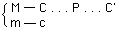

|
CHAPTER XX.
Simple Reproduction .
. . . . .
. . . . . . |
396 | |
|
The Formulation of the Question .
. . . . .
. . . . . |
396 | |
page 396
I. THE FORMULATION OF THE QUESTION
If we study[42] the annual function of social capital -- hence of the total capital of which the individual capitals form only fractional parts, whose movement is their individual movement and simultaneously integrating link in the movement of the total capital -- and its results, i.e., if we study the commodity-product furnished by society during the year, then it must become apparent how the process of reproduction of the social capital takes place, what characteristics distinguish this process of reproduction from the process of reproduction of an individual capital, and what characteristics are common to both. The annual product includes those portions of the social product which replace capital, namely social reproduction, as well as those which go to the consumption-fund, those which are consumed by labourers and capitalists, hence both productive and individual consumption. It comprises also the reproduction (i.e., maintenance) of the capitalist class and the working-class, and thus the reproduction of the capitalist character of the entire process of production.
It is evidently the circulation formula C'--
which we have to analyse, and consumption necessarily plays a role in it; for the point of departure, C'=C+c, the commodity capital, embraces both the constant and variable capital-value, and the surplus-value. Its movement therefore includes both individual and productive consumption. In the circuits M--C . . . P . . . C'--M' and P. . . C'--M'--C . . . P, the movement of the capital is the starting and finishing point. And of course this includes consumption, for the commodity, the product, must be
page 397
sold. When this has assumedly been done it is immaterial for the movement of the individual capital what becomes of the commodities subsequently. On the other hand in the movement of C' . . . C the conditions of social reproduction are discernible precisely from the fact that it must be shown what becomes of every portion of value of this total product, C. In this case the total process of reproduction includes the process of consumption brought about by the circulation quite as much as the process of reproduction of the capital itself.
For our present purpose this process of reproduction must be studied from the point of view of the replacement of the value as well as the substance of the individual component parts of C'. We cannot rest content any longer, as we did in the analysis of the value of the product of the individual capital, with the assumption that the individual capitalist can first convert the component parts of his capital into money by the sale of his commodities, and then reconvert them into productive capital by renewed purchase of the elements of production in the commodity-market. Inasmuch as those elements of production are by nature material, they represent as much a constituent of the social capital as the individual finished product, which is exchanged for them and replaced by them. Contrariwise the movement of that portion of the social commodity-product which is consumed by the labourer in expending his wages, and by the capitalist, in expending his surplus-value, not only forms an integral part of the movement of the total product but intermingles with the movements of the individual capitals, and therefore this process cannot be explained by merely assuming it.
The question that confronts us directly is this: How is the capital consumed in production replaced in value out of the annual product and how does the movement of this replacement intertwine with the consumption of the surplus-value by the capitalists and of the wages by the labourers? It is then first a matter of reproduction on a simple scale. It is furthermore assumed that products are exchanged at their values and also that there is no revolution in the values of the component parts of productive capital. The fact that prices diverge from values cannot, however, exert any influence on the movements of the social capital. On the whole, there is the same exchange of the same quantities of products, although the individual capitalists are involved in value-relations no longer proportional to their respective advances and to the quantities of surplus-value produced singly by every one of them. As for revolutions in value, they do not alter anything
page 398
in the relations between the value-components of the total annual product, provided they are universally and evenly distributed. To the extent however that they are partially and unevenly distributed, they represent disturbances which, in the first place, can be understood as such only as far as they are regarded as divergences from unchanged value-relations, but in the second place, once there is proof of the law according to which one portion of the value of the annual product replaces constant, and another portion variable capital, a revolution either in the value of the constant or that of the variable capital would not alter anything in this law. It would change merely the relative magnitudes of the portions of value which function in the one or the other capacity, because other values would have taken the places of the original ones.
So long as we looked upon the production of value and the value of the product of capital individually, the bodily form of the commodities produced was wholly immaterial for the analysis, whether it was machines, for instance, corn, or looking glasses. It was always but a matter of illustration, and any branch of production could have served that purpose equally well. What we dealt with was the immediate process of production itself, which presents itself at every point as the process of some individual capital. So far as the reproduction of capital was concerned, it was sufficient to assume that that portion of the product in commodities which represents capital-value finds an opportunity in the sphere of circulation to reconvert itself into its elements of production and thus into its form of productive capital; just as it sufficed to assume that both the labourer and the capitalist find in the market those commodities on which they spend their wages and the surplus-value. This merely formal manner of presentation is no longer adequate in the study of the total social capital and of the value of its products. The reconversion of one portion of the value of the product into capital and the passing of another portion into the individual consumption of the capitalist as well as the working-class form a movement within the value of the product itself in which the result of the aggregate capital finds expression; and this movement is not only a replacement of value, but also a replacement in material and is therefore as much bound up with the relative proportions of the value-components of the total social product as with their use-value, their material shape.
Simple[43] reproduction, reproduction on the same scale, ap-
page 399
pears as an abstraction, inasmuch as on the one hand the absence of all accumulation or reproduction on an extended scale is a strange assumption in capitalist conditions, and on the other hand conditions of production do not remain exactly the same in different years (and this is assumed). The assumption is that a social capital of a given magnitude produces the same quantity of commodity-value this year as last, and supplies the same quantum of wants, although the forms of the commodities may change in the process of reproduction. However, as far as accumulation does take place, simple reproduction is always a part of it, and can therefore be studied by itself, and is an actual factor of accumulation. The value of the annual product may decrease, although the quantity of use-values may remain the same; or the value may remain the same although the quantity of the use-values may decrease; or the quantity of value and of the reproduced use-values may decrease simultaneously. All this amounts to reproduction taking place either under more favourable conditions than before or under more difficult ones, which may result in imperfect -- defective -- reproduction. All this can refer only to the quantitative aspect of the various elements of reproduction, not to the role which they play as reproducing capital or as a reproduced revenue in the entire process.
The total product, and therefore the total production, of society may be divided into two major departments:
I. Means of Production, commodities having a form in which they must, or at least may, pass into productive consumption.
II. Articles of Consumption, commodities having a form in which they pass into the individual consumption of the capitalist and the working-class.
All the various branches of production pertaining to each of these two departments form one single great branch of production, that of the means of production in the one case, and that of articles of consumption in the other. The aggregate capital employed in each of these two branches of production constitutes a separate large departmcnt of the social capital.
In each department the capital consists of two parts:
1) Variable Capital. This capital, so far as its value is concerned.
page 400
is equal to the value of the social labour-power employed in this branch of production; in other words, it is equal to the sum of the wages paid for this labour-power. So far as its substance is concerned, it consists of the labour-power in action, i.e., of the living labour set in motion by this capital-value.
2) Constant Capital. This is the value of all the means of production employed for productive purposes in this branch. These, again, are divided into fixed capital, such as machines, instruments of labour, buildings, labouring animals, etc., and circulating constant capital, such as materials of production: raw and auxiliary materials, semi-finished products, etc.
The value of the total annual product created with the aid of this capital in each of the two departments consists of one portion which represents the constant capital c consumed in the process of production and only transferred to the product in accordance with its value, and of another portion added by the entire labour of the year. This latter portion is divided in turn into the replacement of the advanced variable capital v and the excess over and above it, which forms the surplus-value s. And just as the value of every individual commodity, that of the entire annual product of each department consists of c+v+s.
Portion c of the value, representing the constant capital consumed in production, does not coincide with the value of the constant capital employed in production. True, the materials of production are entirely consumed and their values completely transferred to the product. But only a portion of the employed fixed capital is wholly consumed and its value thus transferred to the product. Another part of the fixed capital, such as machines, buildings, etc., continues to exist and function the same as before, though depreciated to the extent of the annual wear and tear. This persistent portion of the fixed capital does not exist for us, when we consider the value of the product. It is a portion of the capital-value, which exists independently and alongside of this newly produced commodity-value. This was shown previously in the analysis of the value of the product of individual capital (Buch I, Kap. VI, p. 192).[*] However, for the present we must leave aside the method of analysis employed there. We saw in the study of the value of the product of individual capital that the value of which the fixed capital was shorn through wear and tear is transferred to the product created during the time of wear, irrespective of whether or not any portion of this fixed capital is
page 401
replaced in kind during this time out of the value thus transferred. At this point in the study of the total social product and of its value, however, we are compelled, at least for the present, to leave out of account that portion of value which is transferred from the fixed capital to the annual product by wear and tear, unless fixed capital is replaced in kind during the year. In one of the following sections of this chapter we shall discuss this point in particular.
We shall base our study of simple reproduction on the following scheme, in which c stands for constant capital, v for variable capital, and s for surplus-value, assuming the rate of surplus-value s/v to be l00 per cent. The figures may indicate millions of marks, francs, or pounds sterling.
I. Production of Means of Production:
[¥]
[42] From Manuscript II. --F. E.
[43] From Manuscript VIII. --F. E.
[44] Mainly from Manuscript II, the schemes from Manuscript VIII. --F. E.
* English edition: Ch. VIII, pp. 202-04. --Ed.
Capital . . . . . . 4,000c + 1,000v = 5,000
Commodity-Product . . 4,000c + 1,000v + 1,000s = 6,000,
II. Production of Articles of Consumption:
Capital . . . . . . 2,000c + 500v = 2,500 Commodity-Product . . 2,000c + 500v + 500s = 3,000,existing in articles of consumption.
Recapitulation: Total annual commodity-product:
I. 4,000c + 1,000v = 6,000 means of production. II. 2,000c + 500v = 3,000 articles of consumption.Total value 9,000, exclusive of the fixed capital persisting in its natural form, according to our assumption.
If we were now to examine the transformations necessary on the basis of simple reproduction, where the entire surplus-value is unproductively consumed, and leave aside for the present the money-circulation that brings them about, we should obtain at the outset three great points of support.
1) The 500v, representing wages of the labourers, and 500s, representing surplus-value of the capitalists, in department II, must be spent for articles of consumption. But their value exists in articles of consumption worth 1,000, held by the capitalists of department II, which replace the advanced 500v and represent the 500s. Consequently the wages and surplus-value of department II are exchanged within this department for products of
In lieu of trying to reproduce subscripted symbols, I have presented them in a smaller font size (10 point), and retained the "normal" (12 point) font for the other context. The reason for this is that the wide-spread use of subscripts left uneven spacing between lines of the text which were very distracting and reaked havoc on one's ability to concentrate on the material. -- DJR]
page 402
this same department. Thereby articles of consumption to the amount of (500v + 500s) II = 1,000, drop out of the total product.
2) The 1,000v plus 1,000s, of department I must likewise be spent for articles of consumption; in other words, for products of department II. Hence they must be exchanged for the remainder of this product equal to the constant capital part, 2,000c. Department II receives in return an equal quantity of means of production, the product of I, in which the value of 1,000v + 1,000s of I is incorporated. Thereby 2,000 IIc and (1,000v + 1,000s) I, drop out of the calculation.
3) There still remain 4,000 Ic. These consist of means of production which can be used only in department I to replace its consumed constant capital, and are therefore disposed of by mutual exchange between the individual capitalists of I, just as the (500v + 500s) II by an exchange between the labourers and capitalists, or between the individual capitalists of II.
Let this serve for the moment to facilitate the understanding of what follows.
We begin with the great exchange between the two classes. (1,000v + 1,000s) I -- these values consisting, in the hands of their producers, of means of production in their natural form, are exchanged for 2,000 IIc, for values consisting of articles of consumption in their bodily form. The capitalist class of II thereby reconverts its constant capital of 2,000 from the form of articles of consumption into that of means of production of articles of consumption, into a form in which it can once more function as a factor of the labour-process and for purposes of self-expansion of value as constant capital-value. On the other hand the equivalent of the labour-power of I (1,000v) and the surplus-value of the capitalists of I (1,000s) are realised thereby in articles of consumption; both of them are converted from their bodily form of means of production into a bodily form in which they can be consumed as revenue.
Now, this mutual exchange is accomplished by means of a circulation of money, which promotes it just as much as it renders its understanding difficult, but which is of decisive im-
page 403
portance because the variable portion of capital must ever resume the form of money, as money-capital converting itself from the form of money into labour-power. The variable capital must be advanced in the form of money in all branches of production carried on at the entire periphery of society simultaneously alongside each other, regardless of whether they belong to category I or II. The capitalist buys the labour-power before it enters into the process of production, but pays for it only at stipulated times, after it has been expended in the production of use-values. He owns, together with the remainder of the value of the product, also that portion of it which is only an equivalent for the money expended in the payment of labour-power, that portion of the value of the product which represents variable capital. In this portion of value the labourer has already supplied the capitalist with the equivalent of his wages. But it is the reconversion of commodities into money, their sale, which restores to the capitalist his variable capital in the form of money-capital, which he may advance once more for the purchase of labour-power.
In department I, then, the aggregate capitalist has paid £1,000 (I say £ solely to indicate that it is value in the form of money), equal to 1,000v, to the labourers for the value of product I already existing as the v-portion, i.e., of the means of production created by them. With these £1,000 the labourers buy articles of consumption of the same value from capitalists II, thereby converting one half of the constant capital II into money; capitalists II, in their turn, buy with these £1,000 means of production, valued at 1,000, from capitalists I; thereby, as far as the latter are concerned, the variable capital-value equal to 1,000v, which, being part of their product, existed in the bodily form of means of production, is thus reconverted into money and can now function anew in the hands of capitalists I as money-capital, which is transformed into labour-power, hence into the most essential element of productive capital. In this way their variable capital flows back to them in the form of money, as a result of the realisation of some of their commodity-capital.
As for the money required to exchange the s-portion of commodity-capital I for the second half of constant capital II, it may be advanced in various ways. In reality this circulation embraces innumerable separate purchases and sales by the individual capitalists of both categories, the money coming in any event from these capitalists, since we have already accounted for the money put into circulation by the labourers. A capitalist of category II can buy, with the money-capital he has besides his
page 404
productive capital, means of production from capitalists of category I, and, vice versa, a capitalist of category I can buy, with money-funds assigned for personal and not for capital expenditure, articles of consumption from capitalists of category II. A certain supply of money, to be used either for the advancement of capital or for the expenditure of revenue must under all circumstances be assumed to exist beside the productive capital in the hands of the capitalists, as we have shown above in parts I and II. Let us assume -- the proportion is wholly immaterial for our purpose -- that one half of the money is advanced by capitalists II in the purchase of means of production for the replacement of their constant capital, while the other half is spent by capitalists I for articles of consumption. In that case department II advances £500 for the purchase of means of production from department I, thereby replacing (inclusive of the above £1,000 coming from the labourers of department I) three-quarters of its constant capital in kind, with the £500 so obtained department I buys articles of consumption from II, thereby completing for one half of the s-portion of its commodity-capital the circulation c--m--c, and thus realising its product in the consumption-fund. By means of this second process the £500 return to the hands of II as money-capital existing beside its productive capital. On the other hand I expends money to the amount of £500 for the purchase of II's articles of consumption in anticipation of the sale of that half of the s-portion of its commodity-capital which is still Iying in store as product. With the same £500 II buys from I means of production, thereby replacing in kind its entire constant capital (1,000 + 500 + 500 = 2,000) while I realises its entire surplus-value in articles of consumption. On the whole, the entire exchange of commodities in the amount of £4,000 would be efiected with a money-circulation of £2,000 which amount is attained only because the entire annual product is described as exchanged in bulk, in a few large lots. The important point here is that II has not only reconverted its constant capital reproduced in the form of articles of consumption, into the form of means of production, but has besides recovered the £500 which it had adyanced to the circulation for the purchase of means of production; and that, similarly, I again possesses not only its variable capital, which it had reproduced in the form of means of production, in money-form, as money-capital once more directly convertible into labour-power, but also the £500 expended in the purchase of articles of consumption in anticipation of the sale of the s-portion of its capital. These £500 flow back to it not be-
page 405
cause of the expenditure incurred, but because of the subsequent sale of a part of its commodity-product incorporating one half of its surplus-value.
In both cases it is not only that the constant capital of II is reconverted from the form of a product into the bodily form of means of production, in which alone it can function as capital; and likewise it is not only that the variable portion of the capital of I is converted into its money-form, and the surplus-value portion of the means of production of I into its consumable form, the form in which it can be used as revenue. It is also that the £500 of money capital, advanced by II in the purchase of means of production prior to selling the corresponding compensating portion of the value of its constant capital -- existing in the form of means of consumption -- flow back to II; and furthermore back to I flow the £500 which were expended anticipando by it for the purchase of articles of consumption. If the money advanced by II at the expense of the constant portion of its commodity-product, and by I at the expense of the surplus-value portion of its commodity-product, flows back to them, this is solely because the one class of capitalists throws £500 into circulation over and above the constant capital existing in the form of commodities in II, and the other class a like amount over and above the surplus-value existing in the form of commodities in I. In the last analysis the two departments have mutually paid one another in full by the exchange of equivalents in the shape of their respective commodities. The money thrown into circulation by them in excess of the values of their commodities, as a means of effecting the exchange of these commodities, returns to each one of them out of the circulation in proportion to the quota which each of the two had thrown into circulation. Neither has grown a farthing richer thereby. II possessed a constant capital of 2,000 in the form of articles of consumption plus 500 in money; now it possesses 2,000 in means of production plus 500 in money, the same as before; in the same way I possesses, as before, a surplus-value of 1,000 (consisting of commodities, means of production, now converted into a consumption-fund) plus 500 in money. The general conclusion is this: Of the money which the industrial capitalists throw into circulation to accomplish their own commodity circulation, whether at the expense of the constant part of the commodity-value or at the expense of the surplus-value existing in the commodities to the extent that it is laid out as revenue, as much returns into the hands of the respective capitalists as was advanced by them for the money-circulation.
page 406
As for the reconversion of the variable capital of class I into the form of money, this capital, after the capitalists of I invested it in wages, exists for them first in the form of commodities in which the labourers delivered it to them. They paid this capital in the form of money to these labourers as the price of their labour-power. To this extent the capitalists have paid forthat constituent part of the value of their commodity-product which is equal to the variable capital expended in the form of money. They are, for this reason, the owners of this portion of the commodity-product as well. But that part of the working-class which is employed by them does not buy the means of production created by it; these labourers buy articles of consumption produced by II. Hence the variable capital advanced by the capitalists of I in the payment of labour-power does not return to them directly. It passes by means of purchases made by the labourers into the hands of the capitalist producers of the commodities necessary for and within the reach of working folks; in other words, it passes into the hands of capitalists II. And not until these expend the money in the purchase of means of production does it return by this circuitous route into the hands of capitalists I.
It follows that, on the basis of simple reproduction, the sum of the values of v+s of the commodity-capital of I (and therefore a corresponding proportional part of the total commodity product of I) must be equal to the constant capital IIc, which is likewise taken as a proportional part of the total commodity-product of department II; or I(v+s)= IIc.
Of the value of the commodity-product of department II there still remain to be studied the constituents v plus s. This analysis has nothing to do with the most important question which occupies our attention here, namely to what extent the division of the value of every individual capitalist commodity-product into c+v+s -- even if brought about by different forms of appearance -- applies also to the value of the total annual product. This question finds its answers on the one hand in the exchange of I(v+s) for IIc, and on the other hand in the investigation, to be made later, of the reproduction of Ic in the annual product of I. Since II(v+s) exists in the bodily form of articles of consumption; since the variable capital advanced to the labourers in payment
page 407
of their labour-power must generally speaking be spent by them for articles of consumption; and since the s-portion of the value of commodities, on the assumption of simple reproduction, is practically spent as revenue for articles of consumption, it is prima facie evident that the labourers II buy back, with the wages received from the capitalists II, a portion of their own product, corresponding to the amount of the money-value received as wages. Thereby the capitalist class II reconverts the money-capital advanced by it in the payment of labour-power into the form of money. It is quite the same as if it had paid the labourers in mere value tokens. As soon as the labourers would realise these value tokens by the purchase of a part of the commodities produced by them but belonging to the capitalists, these tokens would return into the hands of the capitalists. Only, these tokens do not merely represent value but possess it, in golden or silver embodiment. We shall analyse in greater detail later on this sort of reflux of variable capital advanced in the form of money by means of a process in which the working-class appears as the purchaser and the capitalist class as the seller. Here however a different point is at issue, which must be discussed in connection with this return of the variable capital to its point of departure.
Category II of the annual production of commodities consists of a great variety of branches of production, which may, however, be divided into two great sub-divisions by their products:
a) Articles of consumption, which enter into the consumption of the working-class, and, to the extent that they are necessities of life -- even if frequently different in quality and value from those of the labourers -- also form a portion of the consumption of the capitalist class. For our purposes we may call this entire sub-division consumer necessities, regardless of whether such a product as tobacco is really a consumer necessity from the physiological point of view. It suffices that it is habitually such.
b) Articles of luxury, which enter into the consumption of only the capitalist class and can therefore be exchanged only for spent surplus-value, which never falls to the share of the labourer.
As far as the first category is concerned it is obvious that the variable capital advanced in the production of the commodities belonging in it must flow back in money-form directly to that portion of the capitalist class II (i.e., the capitalists IIa) who have produced these necessities of life. They sell them to their own labourers to the amount of the variable capital paid to them in
page 408
wages. This reflux is direct so far as this entire sub-dlvision a of capitalist class II is concerned, no matter how numerous the transactions may be between the capitalists of the various pertinent branches of industry, by means of which the returning variable capital is distributed pro rata. These are processes of circulation, whose means of circulation are supplied directly by the money expended by the labourers. It is different, however, with sub-division IIb. The entire portion of the value produced in this sub-division, IIb(v+s), exists in the bodily form of articles of luxury, i.e., articles which the labouring class can buy no more than it can buy commodity-value Iv existing in the form of means of production, notwithstanding the fact that both the articles of luxury and the means of production are the products of these labourers. Hence the reflux by which the variable capital advanced in this sub-division returns to the capitalist producers in its money-form cannot be direct but must be mediated, as in the case of Iv.
Let us assume for instance that v = 500 and s = 500, as they did in the case of the entire class II; but that the variable capital and the corresponding surplus-value are distributed as follows:
Sub-division a, Necessities of Life: v = 400; s = 400; hence a quantity of commodities in consumer necessities of the value of 400v + 400s = 800, or IIa (400v + 400s).
Sub-division b, Articles of Luxury: of the value of 100v + 100s = 200, or IIb (100v + 100s).
The labourers of IIb have received 100 in money as payment for their labour-power, or say £100. With this money they buy articles of consumption from capitalists IIa to the same amount. This class of capitalists buys with the same money £100 worth of the IIb commodities, and in this way the variable capital of capitalists IIb flows back to them in the form of money.
In IIa there are available once more 400v in money, in the hands of the capitalists, obtained by exchange with their own labourers. Besides, a fourth of the part of the product representing surplus-value has been transferred to the labourers of IIb, and in exchange IIb (100v) have been received in the form of articles of luxury.
Now, assuming that the capitalists of IIa and IIb divide the expenditure of their revenue in the same proportion between necessities of life and luxuries -- three-fifths for necessities for instance and two-fifths for luxurieg -- the capitalists of sub-class IIa will spend three-fifths of their revenue from surplus-value, amounting to 400s, or 240, for their own products, necessities of life, and two-fifths, or 160, for articles of luxury. The capitalists
page 409
of sub-class IIb will divide their surplus-value of 100s in the same way: three-fifths, or 60, for necessities, and two-fifths, or 40, for articles of luxury, the latter being produced and exchanged in their own sub-class.
The 160 in articles of luxury received by (IIa)s pass into the hands of the IIa capitalists in the following manner: As we have seen, 100 of the (IIa) 400s were exchanged in the form of necessities of life for an equal amount of (IIb)v, which exists as articles of luxury, and another 60, consisting of necessities of life, for (IIb) 60s, consisting of luxuries. The total calculation then stands as follows:
2) A part of the 400s (a), equal to the 100v (b), one-fourth of the surplus-value (a), is realised in luxuries in the following way: The labourers (b) received from the capitalists of their sub-division (b) £100 in wages. With this amount they buy one-fourth of the surplus-value (a), i.e., commodities consisting of necessities of life. With this money the capitalists of (a) buy articles of luxury to the same amount, which equals 100v (b), or one half of the entire output of luxuries. In this way the b capitalists get back their variable capital in the form of money and are enabled to resume reproduction by again purchasing labour-power, since the entire constant capital of the whole category II has already been replaced by the exchange of I(v+s) for IIc. The labour-power of the luxury workers is therefore saleable anew only because the part of their own product created as an equivalent for their wages is drawn by capitalists IIa into their consumption-fund, is turned into money. (The same applies to the sale of the labour-power of I, since the IIc for which I(v+s) is exchanged, consists of both articles of luxury and necessities of life, and that which is renewed by means of I(v+s) constitutes the means of production of both luxuries and necessities.)
3) We now come to the exchange between a and b, which is merely exchange between the capitalists of the two sub-divisions. So far we have disposed of the variable capital (400v) and
page 410
part of the surplus-value (100s) in a, and the variable capital (100v) in b. We have furthermore assumed that the average proportion of the expenditure of the capitalist revenue was in both classes two-fifths for luxuries and three-fifths for necessities. Apart from the 100 already expended for luxuries, the entire sub-division a stiII has to be aIIotted 60 for luxuries, and b has proportionately to be aIIotted 40.
(IIa)s is then divided into 240 for necessities and 160 for luxuries, or 240 + 160 = 400s (IIa).
(IIb)s is divided into 60 for necessities and 40 for luxuries; 60 + 40 = 100s (IIb). The last 40 are consumed by this class out of its own product (two-fifths of its surplus-value); the 60 in necessities are obtained by this class through the exchange of 60 of its surplus-value for 60s (a).
We have, then, for the entire capitalist class II the foIIowing (v plus s in sub-division [al consisting of necessities, in [b] of luxuries):
IIa (400v + 400s) + IIb (100v + 100s) = 1,000; by this movement there is thus realised: 500v (a+b) [realised in 400v (a) and 100s (a)] + 500s (a+b) [realised in 300s (a) + 100v (b) + 100s (b)] = 1,000.
For a and b, each considered by itself, we obtain the foIIowing realisation:
If, for the sake of simplicity, we assume the same proportion between the variable and constant capital (which, by the way, is not at aII necessary), we obtain for 400v (a) a constant capital of 1,600, and for 100v (b) a constant capital of 400. We then have the foIIowing two sub-divisions, a and b, in II:
Accordingly 1,600 of the 2,000 IIc in articles of consumption which are exchanged for 2,000 I(v+s), are exchanged for means
page 411
of production of necessities of life and 400 for means of production of luxuries.
The 2,000 I(v+s) would therefore break up into (800v + 800s) I for a, equal to 1,600 means of production of necessities of life, and (200v + 200s) I for b, equal to 400 means of production of luxuries.
A considerable part of the instruments of labour as such, as weII as of the raw and auxiliary materials, etc., is the same for both departments. But so far as the exchange of the various portions of value of the total product I(v+s) is concerned, such a division would be whoIIy immaterial. Both the above 800v of I and the 200v of I are realised because the wages are spent for articles of consumption 1,000 IIc; hence the money-capital advanced for this purpose is distributed evenly on its return among the capitalist producers of I, their advanced variable capital is replaced pro rata in money. On the other hand, so far as the realisation of the 1,000 Is is concerned, the capitalists wiII here like wise draw uniformly (in proportion to the magnitude of their s) 600 IIa and 400 IIb in means of consumption out of the entire second half of IIc equal to 1,000; consequently those who replace the constant capital of IIa wiII draw.
480 (three-fifths) out of 600c (IIa) and 320 (two-fifths) out of 400c (IIb), a total of 800; those who replace the constant capital of IIb wiII draw.
120 (three-fifths) out of 600c (IIa) and 80 (two-fifths) out of 400c (IIb), which equals 200. Grand total, 1,000.
What is arbitrary here is the ratio of the variable to the constant capital of both I and II and so is the identity of this ratio for I and II and their sub-divisions. As for this identity, it has been assumed here merely for the sake of simplification, and it would not alter in any way the conditions of the problem and its solution if we were to assume different proportions. However, the necessary result of aII this, on the assumption of simple reproduction, is the foIIowing:
1) That the new value created by the labour of one year (divisible into v+s) in the bodily form of means of production is equal to the value of the constant capital c contained in the value of the product created by the other part of the annual labour and reproduced in the form of articles of consumption. If it were smaIIer than IIc, it would be impossible for II to replace its constant capital entirely; if it were greater, a surplus would remain unused. In either case, the assumption of simple reproduction would be violated.
page 412
2) That in the case of annual product which is reproduced in the form of articles of consumption, the variable capital v advanced in the form of money can be realised by its recipients inasmuch as they are labourers producing luxuries, only in that portion of the necessities of life which embodies for their capitalist producers prima facie their surplus-value; hence that v, laid out in the production of luxuries, is equal in value to a corresponding portion of s produced in the form of necessities of life, and hence must be smaller than the whole of this s, namely (IIa), and that the variable capital advanced by the capitalist producers of luxuries returns to them in the form of money only by means of the realisation of that v in this portion of s. This phenomenon is quite analogous to the realisation of I(v+s) in IIc, except that in the second case (IIb)v realises itself in a part of (IIa)s of the same value. These proportions remain qualitatively determinant in every distribution of the total annual product, since it actually enters into the process of the annual reproduction brought about by circulation. I(v+s) can be realised only in IIc, just as IIc can only be renewed in function as A component part of productive capital by means of this realisation in the same way, (IIb)v can be realised only in a portion of (IIa)s and (IIb)v can only thus be reconverted into the form of money-capital. It goes without saying that this applies only to the extent that it all is really a result of the process of reproduction itself, i.e., to the extent that the capitalists of IIb, for instance, do not obtain money-capital for v on credit from others. Quantitatively however the exchanges of the various portions of the annual product can take place in the proportions indicated above only so long as the scale and value-relations in production remain stationary and so long as these strict relations are not altered by foreign commerce.
Now, if we were to say after the manner of Adam Smith that I(v+s) resolve themselves into IIc and IIc resolves itself into I(v+s) or, as he used to say more frequently and still more absurdly, I(v+s) constitute component parts of the price (or value in exchange, as he has it) of IIc and IIc constitutes the entire component part of the value of I(v+s) then one could and should likewise say that (IIb)v resolves itself into (IIa)s, or (IIa)s into (IIb)v, or (IIb)v forms a component part of the surplus-value of IIa, and, vice versa, the surplus-value thus resolves itself into wages, or into variable capital, and the variable capital forms a component part of the surplus-value. This absurdity is indeed found in Adam Smith, since with him wages are de-
page 413
termined by the value of the necessities of life, and these commodity-values in their turn by the value of the wages (variable capital) and surplus-value contained in them. He is so absorbed in the fractional parts into which the value-product of one working-day is divided on the basis of capitalism -- namely into v plus s -- that he quite forgets that it is immaterial in simple commodity exchange whether the equivalents existing in various bodily forms consist of paid or unpaid labour, since their production costs in either case the same amount of labour; and that it is also immaterial whether the commodity of A is a means of production and that of B an article of consumption, and whether one commodity has to serve as a component part of capital after its sale while another passes into the consumption-fund and, secundum Adam, is consumed as revenue. The use to which the individual buyer puts his commodity does not come within the scope of commodity-exchange, the sphere of circulation, and does not affect the value of the commodity. This is in no wise altered by the fact that in the analysis of the circulation of the total annual social product, the definite use for which it is intended, the factor of consumption of the various component parts of that product, must be taken into consideration.
In the exchange established above of (IIb)v for a portion of (IIa)s of the same value, and in the further exchanges between (IIa)s and (IIb)s it is by no means assumed that either the individual capitalists of IIa and IIb or their respective totalities divide their surplus-value in the same proportion between necessary articles of consumption and articles of luxury. The one may spend more on this consumption, the other more on that. On the basis of simple reproduction it is merely assumed that a sum of values equal to the entire surplus-value is realised in the consumption-fund. The limits are thus given. Within each department the one may spend more in a, the other in b. But this may compensate itself mutually, so that the capitalist groups of a and b, taken as a whole, each participate in the same proportion in both. The value-relations -- the proportional shares of the two kinds of producers, a and b, in the total value of product II -- consequently also a definite quantitative relation between the branches of production supplying those products -- are however necessarily given in each concrete case; only the proportion chosen as an illustration is a hypothetical one. It would not alter the qualitative aspects if another illustration were selected; only the quantitative determinations would be altered. But if on ac-
page 414
count of any circumstances there arises an actual change in the relative magnitude of a and b, the conditions of simple reproduction would also change accordingly.
Since (IIb)v is realised in an equivalent part of (IIa)s, it follows that in proportion as the luxury part of the annual product grows, as therefore an increasing share of the labour-power is absorbed in the production of luxuries, the reconversion of the variable capital advanced in (IIb)v into money-capital functioning anew as the money-form of the variable capital, and thereby the existence and reproduction of the part of the working-class employed in IIb -- the supply to them of consumer necessities -- depends upon the prodigality of the capitalist class, upon the exchange of a considerable portion of their surplus-value for articles of luxury.
Every crisis at once lessens the consumption of luxuries. It retards, delays the reconversion of (IIb)v into money-capital, permitting it only partially and thus throwing a certain number of the labourers employed in the production of luxuries out of work, while on the other hand it thus clogs the sale of consumer necessities and reduces it. And this without mentioning the unproductive labourers who are dismissed at the same time, labourers who receive for their services a portion of the capitalists' luxury expense fund (these labourers are themselves pro tanto luxuries), and who take part to a very considerable extent in the consumption of the necessities of life, etc. The reverse takes place in periods of prosperity, particularly during the times of bogus prosperity, in which the relative value of money, expressed in commodities, decreases also for other reasons (without any actual revolution in values), so that the prices of commodities rise independently of their own values. It is not alone the consumption of necessities of life which increases. The working-class (now actively reinforced by its entire reserve army) also enjoys momentarily articles of luxury ordinarily beyond its reach, and those articles which at other times constitute for the greater part consumer "necessities" only for the capitalist class. This on its part calls forth a rise in prices.
It is sheer tautology to say that crises are caused by the scarcity of effective consumption, or of effective consumers. The capitalist system does not know any other modes of consumption than effective ones, except that of sub forma pauperis or of the swindler. That commodities are unsaleable means only that no effective purchasers have been found for them, i.e., consumers (since commodities are bought in the final analysis for productive or in-
page 415
dividual consumption). But if one were to attempt to give this tautology the semblance of a profounder justification by saying that the working-class receives too small a portion of its own product and the evil would be remedied as soon as it receives a larger share of it and its wages increase in consequence, one could only remark that crises are always prepared by precisely a period in which wages rise generally and the working-class actually gets a larger share of that part of the annual product which is intended for consumption. From the point of view of these advocates of sound and "simple" (!) common sense, such a period should rather remove the crisis. It appears, then, that capitalist production comprises conditions independent of good or bad will, conditions which permit the working-class to enjoy that relative prosperity only momentarily, and at that always only as the harbinger of a coming crisis.[47]
We saw a while ago that the proportion between the production of consumer necessities and that of luxuries requires the division of II(v+s) between IIa and IIb, and thus of IIc between (IIa)c and (IIb)c. Hence this division affects the character and the quantitative relations of production to their very roots, and is an essential determining factor of its general structure.
Simple reproduction is essentially directed toward consumption as an end, although the grabbing of surplus-value appears as the compelling motive of the individual capitalists; but surplus-value, whatever its relative magnitude may be, is after all supposed to serve here only for the individual consumption of the capitalist.
As simple reproduction is a part, and the most important one at that, of all annual reproduction on an extended scale, this motive remains as an accompaniment of and contrast to the self-enrichment motive as such. In reality the matter is more complicated, because partners in the loot -- the surplus-value of the capitalist -- figure as consumers independent of him.
So far as we have analysed circulation up to the present, it proceeded between the various classes of producers as indicated in the following scheme:
page 416
1) Between class I and class II:
This disposes of the circulation of IIc equal to 2,000, which is exchanged for I (1,000v + 1,000s).
Leaving aside for the present the 4,000 Ic there still remains the circulation of v+s within class II. Now II(v+s) is divided between the sub-classes IIa and IIb in the following manner:
The 400v (a) circulates within its own sub-class; the labourers paid with it buy from their employers, the capitalists IIa, necessary means of subsistence produced by themselves.
Since the capitalists of both sub-classes spend three-fifths of their surplus-value in products of IIa (necessities) and two-fifths in products of IIb (luxuries), the three-fifths of the surplus-value of a, or 240, are consumed within the sub-class. IIa itself; likewise, two-fifths of the surplus-value of b (produced and existing in the form of articles of luxury), within the sub-class IIb.
There remains to be exchanged between IIa and IIb: On the side of IIa: 160s;
On the side of IIb: 100v + 60s. These cancel each other. With their 100, received in the form of money wages, the labourers of IIb buy necessities of life in that amount from IIa. The IIb capitalists likewise buy necessities from IIa to the amount of three-fifths of their surplus-value, or 60. The IIa capitalists thus obtain the money required for investing, as above assumed, two-fifths of their surplus-value, or 160s, in luxuries produced by IIb (100v held by the IIb capitalists as a product replacing the wages paid by them, and 60s). The scheme for this is therefore:
The direct reflux of the money-capital advanced in variable capital, which takes place only in the case of the capitalist department IIa which produces necessities of life, is but an expression, modified by special conditions, of the previously mentioned general law that money advanced to the circulation by producers of commodities returns to them in the normal course
page 417
of commodity circulation. From this it incidentally follows that if any money-capitalist at all stands behind the producer of commodities and advances to the industrial capitalist money-capital (in the strictest meaning of the word, i.e., capital-value in the form of money), the real point of reflux for this money is the pocket of this money-capitalist. Thus the mass of the circulating money belongs to that department of money-capital which is organised and concentrated in the form of banks, etc., although the money circulates more or less through all hands. The way in which this department advances its capital necessitates the continual final reflux to it in the form of money, although this is once again brought about by the reconversion of the industrial capital into money-capital.
The circulation of commodities always requires two things: Commodities which are thrown into circulation and money which is likewise thrown into it. "The process of circulation . . . does not, like direct barter of products, become extinguished upon the use-values changing places and hands. The money does not vanish on dropping out of the circuit of the metamorphosis of a given commodity. It is constantly being precipitated into new places in the arena of circulation vacated by other commodities," etc. (Buch I, Kap. III, p. 92).[*]
For instance in the circulation between IIc and I(v+s) we assumed that II had advanced £500. in money for it. In the innumerable processes of circulation, into which the circulation between large social groups of producers resolves itself, representatives of the various groups will at various times be the first to appear as buyers, and hence throw money into circulation. Quite apart from particular circumstances, this is necessitated by the difference, if nothing else, in the periods of production, and thus of the turnovers, of the various commodity-capitals. So with these £500 II buys from I means of production of the same value and I buys from II articles of consumption valued at £500. Hence the money flows back to II, but this department does not in any way grow richer by this reflux. It had first thrown £500 in money into circulation and drew commodities of the same value out of it; then it sells £500 worth of commodities and draws the same amount of money out of circulation; thus the £500 flow back to it. As a matter of fact, II has thrown into circulation £500 in money and £500 in commodities, which is equal to £1,000. It draws out of the circulation £500 in commoditles and £500 in
page
money. The circulation requires for the handling of £500 in I commodities and £500 in II commodities only £500 in money; hence whoever advanced the money in the purchase of commodities from other producers recovers it when selling his own. Consequently if I had at first bought commodities from II for £500, and later sold to II commodities of the value of £500, these £500 would have returned to I instead of to II.
In class I the money invested in wages, i.e., the variable capital advanced in the form of money, does not return directly in this form but indirectly, by a detour. But in II the £500 of wages return directly from the labourers to the capitalists, and this return is always direct in the case where purchase and sale take place repeatedly between the same persons in such a way that they are acting alternately as buyers and sellers of commodities. The capitalist of II pays for the labour-power in money; he thereby incorporates labour-power in his capital and assumes the role of an industrial capitalist in relation to his labourers as wage-earners, but does so only by means of this act of circulation, which is for him merely a conversion of money-capital into productive capital. Thereupon the labourer, who in the first instance was a seller, a dealer in his own labour-power, appears in the second instance as a buyer, a possessor of money, in relation to the capitalist, who now acts as a seller of commodities. In this way the capitalist recovers the money invested by him in wages. As the sale of these commodities does not imply cheating, etc., but is an exchange of equivalents in commodities and money, it is not a process by which the capitalist enriches himself. He does not pay the labourer twice, first in money and then in commodities. His money returns to him as soon as the labourer exchanges it for his commodities.
However, the money-capital converted into variable capital, i.e., the money advanced for wages, plays a prominent role in the circulation of money itself, since the labourers must live from hand to mouth and cannot give the industrial capitalists credit for any length of time. For this reason variable capital must be advanced in the form of money simultaneously at innumerable territorially different points in society at certain short intervals, such as a week, etc. -- in periods of time that repeat themselves rather quickly (and the shorter these periods, the smaller relatively is the total amount of money thrown at one time into circulation through this channel) -- whatever the various periods of turnover of the capitals in the different branches of industry. In every country with a capitalist production the money-capital so
page 419
advanced constitutes a relatively decisive share of the total circulation, the more so as the same money, before its reflux to its point of departure, passes through the most diverse channels and functions as a medium of circulation for countless other businesses.
Now let us consider the circulation between I(v+s) and IIc from a different angle.
Capitalists I advance £1,000 in the payment of wages. With this money the labourers buy £1,000 worth of means of subsistence from capitalists II. These in turn buy for the same money means of production from capitalists I. Capitalists I thus get back their variable capital in the form of money, while capitalists II have reconverted one half of their constant capital from the form of commodity-capital into that of productive capital. Capitalists II advance another £500 in money to get means of production from I. The capitalists I spend this money on articles of consumption from II. These £500 thus return to capitalists II. They advance this amount again in order to reconvert the last quarter of their constant capital, converted into commodities into its productive bodily form. This money flows back to I and once more withdraws articles of consumption of the same amount from II. Thus the £500 return to II. The capitalists II are now as before in possession of £500 in money and £2,000 in constant capital, the latter having been newly converted from the form of commodity-capital into that of productive capital. By means of £1,500 a quantity of commodities worth £5,000 has been circulated. Namely: 1) I pays £1,000 to his labourers for their labour-power of the same value; 2) With these same £1,000 the labourers buy means of subsistence from II; 3) With the same money II buys means of production from I, thereby restoring to I variable capital to the amount of £1,000 in the form of money; 4) II buys £500 worth of means of production from I; 5) With the same £500 I buys articles of consumption from II; 6) With the same £500 II buys means of production from I; 7) With the same £500 I buys means of subsistence from II. Thus £500 have returned to II, which had thrown them into circulation besides its £2,000 in commodities and for which it did not withdraw from circulation any equivalent in commodities.[48]
The exchange therefore takes the following course:
page 420
1) I pays £1,000 in money for labour-power, hence for commodities equal to £1,000.
2) The labourers buy with their wages amounting in money to £1,000 articles of consumption from II; hence commodities equal to £1,000.
3) With the £1,000 received from the labourers II buys means of production of the same value from I; hence commodities equal to £1,000.
In this way the £1,000 have returned to I as the money-form of its variable capital.
4) II buys £500 worth of means of production from I, hence commodities equal to £500.
5) With the same £500 I buys articles of consumption from II; hence commodities equal to £500.
6) With the same £500 II buys means of production from I; hence commodities equal to £500.
7) With the same £500 I buys articles of consumption from II; hence commodities equal to £500.
Total amount of commodity-values exchanged: £5,000.
The £500 advanced by II for the purchase have returned to it.
The result is as follows:
1) I possesses variable capital in the form of money to the amount of £1,000, which it originally advanced to the circulation. It furthermore expended £1,000 for its individual consumption, in the shape of its own products; i.e., it has spent the money which it had received for the sale of means of production to the amount of £1,000.
On the other hand the bodily form into which the variable capital existing in the form of money must be transformed, i.e., labour-power, has been maintained, reproduced and again made available by consumption as the sole article of trade of its owners, which they must sell in order to live. The relation of wage-labourers and capitalists has likewise been reproduced.
2) The constant capital of II is replaced in kind, and the £500 advanced by the same II to the circulation have returned to it.
As for the labourers I, the circulation is the simple one of
C--M--C: [¥] (labour-power)-- (£1,000, money-form of variable capital I)-- (necessities of life to the amount of £1,000); these £1,000 convert into money to the same amount of value the constant capital II existing in the form of commodities, of means of subsistence.
page 421
As for the capitalists II, the process is C--M, the transformation of a portion of their commodity-product into the money-form, from which it is reconverted into the constituents of productive capital, namely into a portion of the means of production required by them.
In the money advance (£500) made by capitalists II for the purchase of the other parts of the means of production, the money-form of that portion of IIc which exists as yet in the form of commodities (articles of consumption) is anticipated; in the act M--C, in which II buys with M, and C is sold by I, the money (II) is converted into a portion of the productive capiial, while C (I) passes through the act C--M, changes into money, which however does not represent any component part of capital-value for I, but surplus-value converted into money and expended solely for articles of consumption.
In the circuit M--C . . . P . . . C'--M', the first act, M--C, is that of one capitalist, the last, C'--M' (or part of it), is that of another; whether the C, by which M is converted into productive capital, represents a component of constant capital, of variable capital, or surplus-value for the seller of C (who exchanges this C for money), is wholly immaterial for the commodity circulation itself.
Class I, so far as concerns the component v+s of its commodity product, draws more money out of the circulation than it has thrown in. In the first place, the £1,000 of variable capital return to it; in the second place, it sells means of production worth £500 (see above, exchange No. 4); one half of its surplus-value is thus turned into money; then (exchange No. 6) it sells once more £500 worth of means of production, the second half of its surplus-value, and thus the entire surplus-value is withdrawn from circulation in the shape of money. Hence in succession: 1) variable capital reconverted into money, equal to £1,000; 2) one half of the surplus-value turned into money, equal to £500; 3) the other half of the surplus-value, equal to £500; altogether 1,000v + 1,000s turned into money, equal to £2,000. Although I threw only £1,000 into circulation (aside from those exchanges which promote the reproduction of Ic and which we shall have to analyse later), it has withdrawn double that amount from it. Of course s passes into other hands, (II), as soon as it has been converted into money, by being spent for articles of consumption. The capitalists of I withdrew only as much in money as they threw into it in value in the form of commodities; the fact that this value is surplus-value, i.e., that it does not cost
page 422
the capitalists anything, does not alter the value of these commodities in any way; so far as the exchange of values in commodity circulation is concerned, that fact is of no consequence at all. The existence of surplus-value in money is of course transient, the same as all other forms which the advanced capital assumes in its metamorphoses. It lasts no longer than the interval between the conversion of commodities I into money and the subsequent conversion of the money I into commodities II.
If the turnovers had been assumed to be shorter -- or, from the point of view of the simple circulation of commodities, the circulation of money more rapid -- even less money would be ample to circulate the exchanged commodity-values; the amount is always determined -- if the number of successive exchanges is given -- by the sum of the prices, or the sum of values, of the circulating commodities. It is immaterial in what proportion this sum of values consists of surplus-value on the one hand, and of capital-value on the other.
If the wages of I, in our illustration, were paid four times per year, we should have 4 times 250, or 1,000. Hence £250 in money would suffice for the circulation Iv -- l/2 IIc, and for that between the variable capital Iv and the labour-power I. Likewise, if the circulation between Is and IIc were to take place in four turnovers, it would require only £250, or in the aggregate a sum of money, or a money-capital, of £500 for the circulation of commodities amounting to £5,000. In that case the surplus-value would be converted into money four times successively, one-quarter each time, instead of twice successively, one half each time.
If I instead of II should act as buyer in exchange No. 4 and expend £500 for articles of consumption of the same value, II would buy means of production with the same £500 in exchange No. 5; 6) I buys articles of consumption with the same £500; 7) II buys means of production with the same £500 so that the £500 finally return to I, the same as before to II. The surplus-value is here converted into money by means of the money spent by the capitalist producers themselves for their individual consumption. This money represents the anticipated revenue, the anticipated receipts from the surplus-value contained in the commodities still to be sold. The surplus-value is not converted into money by the reflux of the £500; for aside from £1,000 in the form of commodities Iv, I threw £500 in money into circulation at the close of exchange No. 4, and this was additional money, so far as we know, and not the proceeds from the sale of
page 423
commodities. If this money flows back to I, I merely gets back its additional money, and does not thereby convert its surplus-value into money. The conversion of the surplus-value I into money takes place only by the sale of the commodities Is, in which it is incorporated, and lasts each time only until the money obtamed by the sale of the commodities is expended anew in the purchase of articles of consumption.
With additional money (£500) I buys articles of consumption from II; this money was spent by I, which holds its equivalent in II commodities; the money returns for the first time by the purchase from I by II of commodities to the amount of £500; in other words, it returns as the equivalent of the commodities sold by I, but these commodities do not cost I anything, they constitute surplus-value for I, and thus the money thrown into circulation by this very department turns its own surplus-value into money. On buying for the second time (No. 6) I has likewise obtained its equivalent in II commodities. Take it, now, that II does not buy (No. 7) means of production from I. In that case I would have actually paid £1,000 for articles of consumption, thereby consuming its entire surplus-value as revenue; namely, 500 in its own I commodities (means of production) and 500 in money: on the other hand, it would still have £500 in its own commodities (means of production) in stock, and would have got rid of £500 in money.
On the contrary II would have reconverted three-fourths of its constant capital from the form of commodity-capital into that of productive capital; but one-fourth (£500) would be held by it in the form of money-capital, actually in the form of idle money, or of money which has suspended its function and is held in abeyance. Should this state of affairs last for any length of time, II would have to cut down its scale of reproduction by one-fourth.
However the 500 in means of production, which I has on its hands, are not surplus-value existing in the form of commodities, they occupy the place of the £500 advanced in money, which I possessed aside from its £1,000 of surplus-value in commodity-form. In the form of money, they are always convertible; as commodities they are momentarily unsaleable. So much is evident: that simple reproduction -- in which every element of productive capital must be replaced in both II and I -- remains possible in this case only if the 500 golden birds, which I first sent flying, return to it.
If a capitalist (we have only industrial capitalists still to
page 424
deal with here, who are the representatives of all others) spends money for articles of consumption, he is through with it, it goes the way of all flesh. It can flow back to him only if he fishes it out of circulation in exchange for commodities, i.e., for his commodity-capital. As the value of his entire annual commodity-product (his commodity-capital), so that of every one of its elements, i.e., the value of every individual commodity, is divisible, as far as he is concerned, into constant capital-value, variable capital-value, and surplus-value. The conversion into money of every individual commodity (as elements constituting the commodity-product) is consequently at the same time such a conversion of a certain portion of the surplus-value contained in the entire commodity-product. In this case, then, it is literally true that the capitalist himself threw the money into circulation -- when he spent it on articles of consumption -- by which his surplus-value is converted into money, or realised. Of course it is not a question of the identical coins but of a certain amount of hard cash equal to the one (or to a portion of the one) which he had previously thrown into circulation to satisfy his personal wants.
In practice this occurs in two ways: If the business has just been opened, in the current year, it will take quite a while, at least a few months, before the capitalist is able to use any portion of the receipts of his business for his personal consumption. But for all that he does not suspend his consumption for a single moment. He advances to himself (immaterial whether out of his own pocket or by means of credit from the pocket of somebody else) money in anticipation of surplus-value still to be snatched by him; but in doing so he also advances a circulating medium for the realisation of surplus-value to be realised later. If, on the contrary, the business has been running regularly for a longer period payments and receipts are distributed over different terms throughout the year. But one thing continues uninterruptedly, namely, the consumption of the capitalist, which anticipates, and whose volume is computed on a definite proportion of, the customary or estimated revenue. With every portion of commodities sold, a portion of the surplus-value to be produced annually is also realised. But if during the entire year only as much of the produced commodities is sold as is required to replace the constant and variable capital-values contained in them, or if prices were to fall to such an extent that only the advanced capital-value contained in the entire annual commodity-product should be realised on its sale, then the anticipatory character of the expend-
page 425
iture of money in expectation of future surplus-value would be clearly revealed. If our capitalist fails, his creditors and the court investigate whether his anticipated private expenditures were in proper proportion to the volume of his business and to the receipt of surplus-value usually or normally corresponding to it.
So far as the entire capitalist class is concerned, the proposition that it must itself throw into circulation the money required for the realisation of its surplus-value (correspondingly also for the circulation of its capital, constant and variable) not only fails to appear paradoxical, but stands forth as a necessary condition of the entire mechanism. For there are here only two classes: the working-class disposing only of its labour-power, and the capitalist class, which has a monopoly of the social means of production and money. It would rather be a paradox if the working-class were to advance in the first instance from its own resources the money required for the realisation of the surplus-value contained in the commodities. But the individual capitalist makes this advance only by acting as a buyer, expending money in the purchase of articles of consumption or advancing money in the purchase of elements of his productive capital, whether of labour-power or means of production. He never parts with his money unless he gets an equivalent for it. He advances money to the circulation only in the same way as he advances commodities to it. He acts in both instances as the initial point of their circulation.
The actual process is obscured by two circumstances:
1) The appearance in the process of circulation of industrial capital of merchant's capital (the first form of which is always money, since the merchant as such does not create any "product" or "commodity") and of money-capital as an object of manipulation by a special kind of capitalists.
2) The division of surplus-value -- which must always be first in the hands of the industrial capitalist -- into various categories, as vehicles of which there appear, aside from the industrial capitalist, the landlord (for ground-rent), the usurer (for interest), etc., furthermore the government and its employees, rentiers, etc. These gentry appear as buyers vis-à-vis the industrial capitalist and to that extent as converters of his commodities into money; they too throw "money" pro parte into the circulation and he gets it from them. But it is always forgotten from what source they derived it originally, and continue deriving it ever anew.
page 426
It remains for us to analyse the constant capital of department I, amounting to 4,000c. This value is equal to the value -- appearing anew in the commodity-product I -- of the means of production consumed in the creation of this quantity of commodities. This re-appearing value, which was not produced in the process of production of I, but entered into it during the preceding year as constant value, as the given value of its means of production, exists now in the entire part of commodity mass I not absorbed by category II. And the value of this quantity of commodities thus left in the hands of the I capitalists equals two-thirds of the value of their entire annual commodity-product. In the case of the individual capitalist producing some particular means of production we could say: He sells his commodity-product; he converts it into money. By converting it into money he has also reconverted into money the constant portion of the value of his product. With this portion of value converted into money he then buys his means of production once more from other sellers of commodities or transforms the constant portion of the value of his product into a bodily form in which it can resume its function of productive constant capital. But now this assumption becomes impossible. The capitalist class of I comprises the totality of the capitalists producing means of production. Besides, the commodity-product of 4,000, which is left on their hands, is a portion of the social product which cannot be exchanged for any other, because no such other portion of the annual product remains. With the exception of these 4,000, all the remainder has been disposed of. One portion has been absorbed by the social consumption-fund, and another portion has to replace the constant capital of department II, which has already exchanged everything it could dispose of in an exchange with department I.
The difficulty is solved very easily if we remember that the entire commodity-product I in its bodily form consists of means of production, i.e., of the material elements of the constant capital itself. We meet here the same phenomenon which we witnessed before under II, only in a different aspect. In the case of II the entire commodity-product consisted of articles of consumption. Hence one portion of it, measured by the wages plus surplus-value contained in this product, could be consumed by its
page 427
own producers. Here, in the case of I, the entire product consists of means of production, of buildings, machinery, vessels, raw and auxiliary materials, etc. One portion of them, namely that replacing the constant capital employed in this sphere, can therefore immediately function anew in its bodily form as a component of the productive capital. So far as it goes into circulation, it circulates within class I. In II a part of the commodity-product is individually consumed in kind by its own producers while in I a portion of the product is productively consumed in kind by its capitalist producers.
In the part of the commodity-product I equal to 4,000c the constant capital-value consumed in this category re-appears, and does so in a bodily form in which it can immediately resume its function of productive constant capital. In II that portion of the commodity-product of 3,000 whose value is equal to the wages plus the surplus-value (equal to 1,000) passes directly into the individual consumption of the capitalists and labourers of II, while on the other hand the, constant capital-value of this commodity-product (equal to 2,000) cannot re-enter the productive consumption of the II capitalists but must be replaced by exchange with I.
In I, on the contrary, that portion of its commodity-product of 6,000 whose value is equal to the wages plus the surplus-value (equal to 2,000) does not pass into the individual consumption of its producers, and cannot do so on account of its bodily form. It must first be exchanged with II. Contrariwise the constant portion of the value of this product, equal to 4,000, exists in a bodily form in which -- taking the capitalist class I as a whole -- it can immediately resume its function of constant capital of that class. In other words, the entire product of department I consists of use-values which, on account of their bodily form, can under a capitalist mode of production serve only as elements of constant capital. Hence one-third (2,000) of this product of 6,000 replaces the constant capital of department II, and the other two-thirds the constant capital of department I.
The constant capital I consists of a great number of different groups of capital invested in the various branches of production of means of production, so much in iron works, so much in coal-mines, etc. Every one of these groups of capital, or every one of these social group capitals, is in its turn composed of a larger or smaller number of independently functioning individual capitals. In the first place, the capital of society, for instance 7,500 (which may mean millions, etc.) is composed of various groups of capital;
page 428
the social capital of 7,500 is divided into separate parts, every one of which is invested in a special branch of production; each portion of the social capital-value invested in some particular branch of production consists, so far as its bodily form is concerned, partly of means of production required in that particular sphere of production, partly of the labour-power needed in that business and trained accordingly, variously modified by division of labour, according to the specific kind of labour to be performed in each individual sphere of production. Each portion of social capital invested in any particular branch of production in its turn consists of the sum of the individual capitals invested in it and functioning independently. This patently applies to both departments, I as well as II.
As for the constant capital-value re-appearing in I in the form of its commodity-product, it re-enters in part as means of production into the particular sphere of production (or even into the individual business) from which it emerges as product; for instance corn into the production of corn, coal into the production of coal, iron in the form of machines into the production of iron, etc.
However since the partial products constituting the constant capital-value I do not return directly to their particular or individual sphere of production, they merely change their place. They pass in their bodily form to some other sphere of production of department I, while the product of other spheres of production of department I replaces them in kind. It is merely a change of place of these products. All of them re-enter as factors replacing constant capital in I, only instead of the same group of I they enter another. Since an exchange takes place here between the individual capitalists of I, it is an exchange of one bodily form of constant capital for another bodily form of constant capital, of one kind of means of production for other kinds of means of production. It is an exchange of the different individual parts of constant capital I among themselves. Products which do not serve directly as means of production in their own sphere are transferred from their place of production to another and thus mutually replace one another. In other words (similarly to what we saw in the case of the surplus-value II), every capitalist I draws from this quantity of commodities, proportionally to his share in the constant capital of 4,000, the means of production required by him. If production were socialised instead of capitalistic, these products of department I would evidently just as regularly be redistributed as means of production to the various branches
page 429
of this department, for purposes of reproduction, one portion remaining directly in that sphere of production from which it emerged as a product, another passing over to other places of production, thereby giving rise to a constant to-and-fro movement between the various places of production in this department.
The total value of the annually produced articles of consumption is thus equal to the variable capital-value II reproduced during the year plus the newly produced surplus-value II (i.e., equal to the value produced by II during the year) plus the variable capital-value I reproduced during the year and the newly produced surplus-value I (i.e., plus the value created by I during the year).
On the assumption of simple reproduction the total value of the annually produced articles of consumption is therefore equal to the annual value-product, i.e., equal to the total value produced during the year by social labour, and this must be so, because in simple reproduction this entire value is consumed.
The total social working-day is divided into two parts: 1) Necessary labour which creates in the course of the year a value of 1,500v; 2) surplus-labour, which creates an additional value, or surplus-value, of 1,500s. The sum of these values, 3,000, is equal to the value of the annually produced articles of consumption -- 3,000. The total value of the articles of consumption produced during the year is therefore equal to the total value produced by the total social working-day during the year, equal to the value of the social variable capital plus the social surplus-value, equal to the total new product of the year.
But we know that although these two magnitudes of value are equal the total value of commodities II, the articles of consumption, is not produced in this department of social production. They are equal because the constant capital-value re-appearing in II is equal to the value newly produced by I (value of variable capital plus surplus-value); therefore I(v+s)can buy the part of the product of II which represents the constant capital-value for its producers (in department II). This shows, then, why the value of the product of capitalists II, from the point of view of society, may be resolved into v+s although for
page 430
these capitalists it is divided into c+v+s. This is so only because IIc is here equal to I(v+s), and because these two components of the social product interchange their bodily forms by exchange so that after this transformation IIc exists once more in means of production and I(v+s) in articles of consumption.
And it is this circumstance which induced Adam Smith to maintain that the value of the annual product resolves itself into v+s. This is true 1) only for that part of the annual product which consists of articles of consumption; and 2) it is not true in the sense that this total value is produced in II and that the value of its product is equal to the value of the variable capital advanced in II plus the surplus-value produced in II. It is true only in the sense that II(c+v+s) is equal to II(v+s) + I(v+s) or because IIc is equal to I(v+s).
It follows furthermore:
The social working-day (i.e., the labour expended by the entire working-class during the whole year), like every individual working-day, breaks up into only two parts, namely into necessary labour and surplus-labour, and the value produced by this working-day consequently likewise resolves itself into only two parts, namely into the value of the variable capital, or that portion of the value with which the labourer buys the means of his own reproduction, and the surplus-value which the capitalist may spend for his own individual consumption. Nevertheless, from the point of view of society, one part of the social working-day is spent exclusively on the production of new constant capital, namely of products exclusively intended to function as means of production in the labour-process and hence as constant capital in the accompanying process of self-expansion of value. According to our assumption the total social working-day presents itself as a money-value of 3,000, only one-third of which, or 1,000, is produced in department II, which manufactures articles of consumption, that is, the commodities in which the entire value of the variable capital and the entire surplus-value of society are ultimately realised. Thus, according to this assumption, two-thirds of the social working-day are employed in the production of new constant capital. Although from the standpoint of the individual capitalists and labourers of department I these two-thirds of the social working-day serve merely for the production of variable capital-value plus surplus-value, the same as the last third of the social working-day in department II, still from the point of view of society and likewise of the use-value of the product, these two-thirds of the social working-day produce
page 431
only replacement of constant capital in the process of productive consumption or already so consumed. Also when viewed individually these two-thirds of the working-day, while producing a total value equal only to the value of the variable capital plus surplus-value for the producer, nevertheless do not produce any use-values of a kind on which wages or surplus-value could be expended; for their products are means of production.
It must be noted in the first place that no portion of the social working-day, whether in I or in II, serves for the production of the value of the constant capital employed and functioning in these two great spheres of production. They produce only additional value, 2,000 I(v+s) + 1,000 II(v+s), in addition to the value of the constant capital equal to 4,000 Ic + 2,000 IIc. The new value produced in the form of means of production is not yet constant capital. It merely is intended to function as such in the future.
The entire product of II -- the articles of consumption -- viewed concretely as a use-value, in its bodily form, is a product of the one-third of the social working-day spent by II. It is the product of labour in its concrete form -- such as the labour of weaving, baking, etc., performed in this department -- the product of this labour, inasmuch as it functions as the subjective element of the labour-process. As to the constant portion of the value of this product II, it re-appears only in a new use-value, in a new bodily form, the form of articles of consumption, while it existed previously in the form of means of production. Its value has been transferred by the labour-process from its old bodily form to its new bodily form. But the value of these two-thirds of the product-value, equal to 2,000, has not been produced in this year's self-expansion process of II.
Just as from the point of view of the labour-process, the product of II is the result of newly functioning living labour and of the assumed means of production assigned to it, in which that labour materialises itself as in its objective conditions, so, from the point of view of the process of self-expansion, the value of the product of II, equal to 3,000, is composed of a new value (500v + 500s =1,000) produced by the newly added one-third of the social working-day and of a constant value in which are embodied two-thirds of a past social working-day that had elapsed before the present process of production of II here under consideration. This portion of the value of the II product finds expression in a portion of the product itself. It exists in a quantity of articles of consumption worth 2,000, or two-thirds of
page 432
a social working-day. This is the new use-form in which this value-portion re-appears. The exchange of part of the articles of consumption equal to 2,000 IIc for means of production of I equal to I (1,000v + 1,000s) thus really represents an exchange of two-thirds of an aggregate working-day -- which do not constitute any portion of this year's labour, and elapsed before this year -- for two-thirds of the working-day newly added this year. Two-thirds of this year's social working-day could not be employed in the production of constant capital and at the same time constitute variable capital-value plus surplus-value for their own producers unless they were to be exchanged for a portion of the value of the annually consumed articles of consumption in which are incorporated two-thirds of a working-day spent and realised before this year. It is an exchange of two-thirds of this year's working-day for two-thirds of a working-day spent before this year, an exchange of this year's labour-time for last year's. This explains the riddle of how the value-product of an entire social working-day can resolve itself into variable capital-value plus surplus-value, although two-thirds of this working-day were not expended in the production of articles in which variable capital or surplus-value can be realised, but rather in the production of means of production for the replacement of the capital consumed during the year. The explanation is simply that two-thirds of the value of the product of II, in which the capitalists and labourers of I realise the variable capital-value plus surplus-value produced by them (and which constitute two-ninths of the value of the entire annual product), are, so far as their value is concerned, the product of two-thirds of a social working-day of a year prior to the current one.
The sum of the social product I and II -- means of production and articles of consumption -- is indeed, viewed from the stand-point of their use-value, in their concrete, bodily form, the product of this year's labour, but only to the extent that this labour itself is regarded as useful and concrete and not as an expenditure of labour-power, as value-creating labour. And even the first is true only in the sense that the means of production have transformed themselves into new products, into this year's products solely by dint of the living labour added on to them, operating on them. On the contrary, this year's labour could not have transformed itself into products without means of production independent of it, without instruments of labour and materials of production.
page 433
The analysis of the total value of the product of 9,000, and of the categories into which it is divided, does not present any greater difficulty than that of the value produced by an individual capital. On the contrary, they are identical.
The entire annual social product here contains three social working-days, each of one year. The value expressed by each one of these working-days is 3,000, so that the value expressed by the total product is equal to 3 x 3,000, or 9,000.
Furthermore the following portions of this working time have elapsed prior to the one-year process of production, the product of which we are now analysing: In department I four-thirds of a working-day (with a product worth 4,000), and in department II two-thirds of a working-day (with a product worth 2,000), making a total of two social working-days with a product worth 6,000. For this reason 4,000 Ic + 2,000 IIc = 6,000c figure as the value of the means of production, or the constant capital-value re-appearing in the total value of the social product.
Furthermore one-third of the social working-day of one year newly added in department I is necessary labour, or labour replacing the value of the variable capital of 1,000 Iv and paying the price of the labour employed by I. In the same way one-sixth of a social working-day in II is necessary labour with a value of 500. Hence 1,000 Iv + 500 IIv = 1,500v, expressing the value of one half of the social working-day, is the value-expression of the first half of the aggregate working-day added this year and consisting of necessary labour.
Finally, in department I one-third of the aggregate working-day, with a product worth 1,000, is surplus-labour, and in department II one-sixth of the working-day, with a product worth 500, is surplus-labour. Together they constitute the other half of the added aggregate working-day. Hence the total surplus value produced is equal to 1,000 Is + 500 IIs, or 1,500s.
Thus:
The constant capital portion of the value of the social product (c):
Necessary labour (v) expended during the year:
Surplus-labour (s) expended during the year:
page 434
Value produced by annual labour (v+s) = 3,000.
The difficulty, then, does not consist in the analysis of the value of the social product itself. It arises in the comparison of the component parts of the value of the social product with its material constituents.
The constant, merely re-appearing portion of value is equal to the value of that part of this product which consists of means of production and is incorporated in that part.
The new value-product of the year, equal to v+s, is equal to the value of that part of this product which consists of articles of consumption and is incorporated in it.
But with exceptions of no consequence here, means of production and articles of consumption are wholly different kinds of commodities, products of entirely different bodily or use-forms, and, therefore, products of wholly different classes of concrete labour. The labour which employs machinery in the production of means of subsistence is vastly different from the labour which makes machinery. The entire aggregate annual working-day, whose value-expression is 3,000, seems spent in the production of articles of consumption equul to 3,000, in which no constant portion of value re-appears, since these 3,000, equal to 1,500v + 1,500s, resolve themselves only into variable capital-value and surplus-value. On the other hand the constant capital-value of 6,000 re-appears in a class of products quite different from articles of consumption, namely in means of production, while as a matter of fact no part of the social working-day seems spent in the production of these new products. It seems rather that the entire working-day consists only of classes of labour which do not result in means of production but in articles of consumption. This mystery has already been cleared up. The value-product of the year's labour is equal to the value of the products of department II, to the total value of the newly produced articles of consumption. But the value of these products is greater by two-thirds than that portion of the annual labour which has been expended in the sphere of production of articles of consumption (department II). Only one-third of the annual labour has been expended in their production. Two-thirds of this annual labour have been expended in the production of means of production, that is to say, in department I. The value-product created during this time in I, equal to the variable capital-value plus surplus-value pro-
page 435
duced in I, is equal to the constant-capital-value of II re-appearing in articles of consumption of II. Hence they may be mutually exchanged and replaced in kind. The total value of the articles of consumption of II is therefore equal to the sum of the new value-product of I and II, or II(c+v+s) is equal to I(v+s) + II(v+s), hence equal to the sum of the new values produced by the year's labour in the form of v plus s.
On the other hand the total value of the means of production (I) is equal to the sum of the constant capital-value re-appearing in the form of means of production (I) and in that of articles of consumption (II); in other words, equal to the sum of the constant capital-value re-appearing in the total product of society. This total value is equal in terms of value to four-thirds of a working day preceding the process of production of I and two-thirds of a working-day preceding the process of production of II, in all equal to two aggregate working-days.
The difficulty with the annual social product arises therefore from the fact that the constant portion of value is represented by a wholly different class of products -- means of production -- than the new value v+s added to this constant portion of value and represented by articles of consumption. Thus the appearance is created, so far as value is concerned, that two-thirds of the consumed mass of products are found again in a new form as new product, without any labour having been expended by society in their production. This is not so in the case of an individual capital. Every individual capitalist employs some particular concrete kind of labour, which transforms the means of production peculiar to it into a product. Let for instance the capitalist be a machine-builder, the constant capital expended during the year 6,000c, the variable 1,500v, the surplus-value 1,500s, the product 9,000, the product, say, 18 machines of 500 each. The entire product here exists in the same form, that of machines. (If he produces various kinds, each kind is calculated separately.) The entire commodity-product is the result of the labour expended during the year in machine-building; it is a combination of the same concrete kind of labour with the same means of production. The various portions of the value of the product therefore present themselves in the same bodily form: 12 machines embody 6,000c, 3 machines 1,500v, 3 machines 1,500s. In the present case it is evident that the value of the 12 machines is equal to 6,000c, not because there is incorporated in these 12 machines only labour performed previously to the manufacture of these machines and not labour expended on build-
page 436
ing them. The value of the means of production for 18 machines did not of itself become transformed into 12 machines but the value of these 12 machines (consisting itself of 4,000c + 1,000v + 1,000s) is equal to the total value of the constant capital contained in the 18 machines. The machine-manufacturer must therefore sell 12 of the 18 machines in order to replace his expended constant capital, which he requires for the reproduction of 18 new machines. On the contrary, the thing would be inexplicable if in spite of the fact that the labour expended was employed solely in the manufacture of machines, the result were to be: On the one hand 6 machines equal to 1,500v + 1,500s, on the other iron, copper, screws, belts, etc., of a value amounting to 6,000c, i.e., the means of production of the machines in their bodily form, which, as we know, the individual machine-building capitalist does not produce himself but must replace by way of the process of circulation. And yet it seems at first glance that the reproduction of the annual product of society takes place in this absurd way.
The product of an individual capital, i.e., of every fraction of the social capital endowed with a life of its own and functioning independently, has a bodily form of one kind or another. The only condition is that this product must really have a use-form, a use-value, which gives it the imprint of a member of the world of commodities capable of circulation. It is immaterial and accidental whether or not it can re-enter as a means of production into the same process of production from which it emerged as a product; in other words, whether the portion of its value representing the constant part of the capital has a bodily form in which it can actually function again as constant capital. If not, this portion of the value of the product is reconverted into the form of its material elements of production by means of sale and purchase and thus the constant capital is reproduced in the bodily form capable of functioning.
It is different with the product of the aggregate social capital. All the material elements of reproduction must in their bodily form constitute parts of this product. The consumed constant part of capital can be replaced by the aggregate production only to the extent that the entire constant part of the capital re-appearing in the product re-appears in the bodily form of new means of production which can really function as constant capital. Hence, simple reproduction being assumed, the value of that portion of the product which consists of means of production must be equal to the constant portion of the value of social capital.
page 437
Furthermore: Considered individually, the capitalist produces in the value of his product by means of the newly added labour only his variable capital plus surplus-value, while the constant part of the value is transferred to the product owing to the concrete character of the newly added labour.
Considered socially that portion of the social working-day which produces means of production, hence adding new value to them as well as transferring to them the value of the means of production consumed in their manufacture, creates nothing but new constant capital intended to replace that consumed in the shape of old means of production in both departments I and II. It creates only product intended for productive consumption. The entire value of this product, then, is only value which can function anew as constant capital, which can only buy back constant capital in its bodily form, and which, for this reason, resolves itself, considered socially, neither into variable capital nor surplus-value.
On the other hand that part of the social working-day which produces articles of consumption does not create any portion of the social replacement capital. It creates only products intended, in their bodily form, to realise the value of the variable capital and surplus-value of I and II.
Speaking of the point of view of society, and therefore considering the aggregate product of society, which comprises both the reproduction of social capital and individual consumption, we must not lapse into the manner copied by Proudhon from bourgeois economy and look upon this matter as though a society with a capitalist mode of production, if viewed en bloc, as a totality, would lose this its specific historical and economic character. No, on the contrary. We have, in that case, to deal with the aggregate capitalist. The aggregate capital appears as the capital stock of all individual capitalists combined. This joint-stock company has in common with many other stock companies that everyone knows what he puts in, but not what he will get out of it.
The aggregate value of the social product amounts to 9,000, equal to 6,000c + 1,500v + 1,300s, i.e., 6,000 reproduce the value of the means of production and 3,000 that of the articles of con-
page 438
sumption. The value of the social revenue (v+s) amounts therefore to only one-third of the value of the aggregate product, and the totality of consumers, labourers as well as capitalists, can draw commodities, products out of the total social product and incorporate them in their consumption-fund only to the amount of this one-third. On the other hand 6,000, or two-thirds, of the value of the product, are the value of the constant capital which must be replaced in kind. Means of production to this amount must therefore again be incorporated in the production-fund. Storch recognised this as essential without being able to prove it: "It is clear that the value of the annual product is divided partly into capital and partly into profits, and that each one of these portions of the value of the annual product is regularly employed in buying the products which the nation needs both for the maintenance of its capital and for replenishing its consumption-fund. . . . The products which constitute the capital of a nation are not to be consumed." (Storch, Considèrations sur la nature du revenu national, Paris, 1824, pp. 134-35, 150.)
Adam Smith, however, has promulgated this astounding dogma, which is believed to this day, not only in the previously mentioned form, according to which the entire value of the social product resolves itself into revenue, into wages plus surplus-value, or, as he expresses it, into wages plus profit (interest) plus ground-rent, but also in the still more popular form, according to which the consumers must "ultimately" pay to the producers the entire value of the product. This is to this day one of the best-established commonplaces, or rather eternal truths, of the so-called science of political economy. This is illustrated in the following plausible manner: Take any article, for instance, a linen shirt. First, the spinner of linen yarn has to pay the flax-grower the entire value of the flax, i.e., the value of flax-seed, fertilisers, labouring cattle feed, etc., plus that part of the value which the fixed capital, such as buildings, agricultural implements, etc., of the flax-grower gives up to the product; the wages paid in the production of the flax; the surplus-value (profit, ground-rent) embodied in the flax; finally the carriage costs of the flax from its place of production to the spinnery. Next, the weaver has to reimburse the spinner of the linen yarn not only for the price of the flax, but also for that portion of the value of machinery, buildings, etc., in short of the fixed capital, which is transferred to the flax; furthermore, all the auxiliary materials consumed in the spinning process, the wages of the spinners, the surplus-value, etc., and so the thing goes on with
page 439
the bleacher, the transportation costs of the finished linen, and finally the shirtmaker, who has to pay the entire price of all preceding producers, who supplied him only with his raw material. In his hands a further addition of value takes place, partly through the value of constant capital consumed in the manufacture of shirts in the shape of instruments of labour, auxiliary materials, etc., and partly through the labour expended, which adds the value of the shirtmakers' wages plus the surplus-value of the shirt manufacturer. Now let this entire product in shirts cost ultimately £100 and let this be the aliquot part of the value of the total annual product expended by society on shirts. The consumers of the shirts pay these £100, i.e., the value of all the means of production contained in the shirts, and of the wages plus surplus-value of the flax-grower, spinner, weaver, bleacher, shirt manufacturer, and all carriers. This is absolutely correct. Indeed, every child can see that. But then it says: that's how matters stand with regard to the value of all other commodities. It should say: That's how matters stand with regard to the value of all articles of consumption, with regard to the value of that portion of the social product which passes into the consumption-fund, i.e., with regard to that portion of the value of the social product which can be expended as revenue. True enough, the sum of the values of all these commodities is equal to the value of all the means of production (constant portions of capital) used up in them plus the value created by the labour last added (wages plus surplus-value). Hence the totality of the consumers can pay for this entire sum of values because, although the value of each individual commodity is made up of c+v+s, nevertheless the sum of the values of all commodities passing into the consumption-fund, taken at its maximum, can be equal only to that portion of the value of the social product which resolves itself into v+s, in other words, equal to that value which the labour expended during the year has added to the existing means of production -- i.e., to the value of the constant capital. As for the value of the constant capital, we have seen that it is replaced out of the mass of social products in a two-fold way. First, through an exchange by capitalists II, who produce articles of consumption, with capitalists I, who produce the means of production for them. And here is the source of the saying that what is capital for the one is revenue for the other. But this is not the actual state of affairs. The 2,000 IIc existing in the shape of articles of consumption worth 2,000 constitute a constant capital-value for
page 440
the capitalist class of II. They therefore cannot consume this value themselves, although the product in accordance with its bodily form is intended for consumption. On the other hand, the 2,000 I(v+s) are wages plus surplus-value produced by capitalist and working-class I. They exist in the bodily form of means of production, of things in which their own value cannot be consumed. We have here, then, a sum of values to the amount of 4,000, one half of which, before and after the exchange, replaces only constant capital, while the other half forms only revenue.
In the second place the constant capital of department I is replaced in kind, partly by exchange among capitalists I, partly by replacement in kind in each individual business.
The phrase that the value of the entire annual product must ultimately be paid by the consumer would be correct only if consumer were taken to comprise two vastly different kinds: individual consumers and productive consumers. However that one portion of the product must be consumed productively means nothing but that it must function as capital and not be consumed as revenue.
If we divide the value of the aggregate product, equal to 9,000, into 6,000c + 1,500v + 1,500s and look upon the 3,000(v+s) only in its quality of revenue, then, on the contrary, the variable capital seems to disappear and capital, socially speaking, to consist only of constant capital. For that which appeared originally as 1,500v has resolved itself into a portion of the social revenue, into wages, the revenue of the working-class, and its character of capital has thus vanished. This conclusion is actually drawn by Ramsay. According to him, capital, socially considered, consists only of fixed capital, but by fixed capital he means the constant capital, that quantity of values which consists of means of production, whether these means of production are instruments or materials of labour, such as raw materials, semi-finished products, auxiliary materials, etc. He calls the variable capital circulating capital: "Circulating capital consists exclusively of subsistence and other necessaries advanced to the workmen, previous to the completion of the produce of their labour. . . . Fixed capital alone, not circulating, is properly speaking a source of national wealth. . . . Circulating capital is not an immediate agent in production, nor even essential to it at all, but merely a convenience rendered necessary by the deplorable poverty of the mass of the people. . . . Fixed capital alone constitutes an element of cost of production in a national point
page 441
of view." (Ramsay, l.c., pp. 23 to 26, passim.) Ramsay defines fixed capital, by which he means constant capital, more closely in the following words: "On the length of time during which any portion of the product of that labour" (namely labour be stowed on any commodity) "has existed as fixed capital; that is, in a form in which, though assisting to raise the future commodity, it does not maintain labourers." (Ibid., p. 59.)
Here we see once more the calamity Adam Smith brings on by submerging the distinction between constant and variable capital in that between fixed capital and circulating capital. Ramsay's constant capital consists of instruments of labour, his circulating capital of means of subsistence. Both of them are commodities of a given value. The one can no more create surplus-value than the other.
The entire annual reproduction, the entire product of a year is the product of the useful labour of that year. But the value of this total product is greater than that portion of the value in which the annual labour, the labour-power expended during the current year, is incorporated. The value-product of this year, the value newly created during this period in the form of commodities, is smaller than the value of the product, the aggregate value of the mass of commodities fabricated during the entire year. The difference obtained by deducting from the total value of the annual product that value which was added to it by the labour of the current year, is not really reproduced value but only value re-appearing in a new form of existence. It is value transferred to the annual product from value existing prior to it, which may be of an earlier or later date, according to the durability of the components of the constant capital which have participated in that year's social labour-process, a value which may originate from the value of means of production which came into the world the previous year or in a number of years even previous to that. It is by all means a value transferred from means of production of former years to the product of the current year.
page 442
Take our scheme. We have, after the exchange of the elements hitherto considered between I and II, and within II:
I) 4,000c + 1,000v + 1,000s (the latter 2,000 realised in articles of consumption of IIc) = 6,000.
II) 2,000c (reproduced by exchange with I(v+s) + 500v + 500s = 3,000.
Sum of values = 9,000.
Value newly produced during the year is contained only in v and s. The sum of the value-product of this year is therefore equal to the sum of v+s, or 2,000 I(v+s) + 1,000 II(v+s) = 3,000. All remaining value-parts of the product of this year are merely value transferred from the value of earlier means of production consumed in the annual production. The current annual labour has not produced any value other than that of 3,000. That represents its entire annual value-product.
Now, as we have seen, the 2,000 I(v+s) replace for class II its 2,000 IIc in the bodily form of means of production. Two-thirds of the annual labour, then, expended in category I, have newly produced constant capital II, both its entire value and its bodily form. From the standpoint of society, two-thirds of the labour expended during the year have created new constant capital-value realised in the bodily form appropriate for department II. Thus the greater portion of the annual labour of society has been spent in the production of new constant capital (capital-value existing in the form of means of production) in order to replace the value of the constant capital expended in the production of articles of consumption. What distinguishes capitalist society in this case from the savage is not, as Senior[50] thinks, the privilege and peculiarity of the savage to expend his labour at times in a way that does not procure him any products resolvable (exchangeable) into revenue, i.e., into articles of consumption. No, the distinction consists in the following:
a) Capitalist society employs more of its available annual labour in the production of means of production (ergo, of constant capital) which are not resolvable into revenue in the form of wages or surplus-value, but can function only as capital.
b) When a savage makes bows, arrows, stone hammers, axes, baskets, etc., he knows very well that he did not spend the time
page 443
so employed in the production of articles of consumption, but that he has thus stocked up the means of production he needs, and nothing else. Furthermore, a savage commits a grave economic sin by his utter indifference to waste of time, and, as Tylor[51] tells us, takes sometimes a whole month to make one arrow.
The current conception whereby some political economists seek to extricate themselves from the theoretical difficulty, i.e., the understanding of the real interconnections -- that what is capital to one is revenue to another, and vice versa -- is only partially correct and becomes utterly wrong (harbours therefore a complete misunderstanding of the entire process of exchange taking place in annual reproduction, hence also a misunderstanding of the actual basis of the partially correct) as soon as the character of universality is attributed to it.
We now summarise the actual relations on which the partial correctness of this conception rests, and in doing so the wrong conception of these relations will come to the surface.
1) The variable capital functions as capital in the hands of the capitalist and as revenue in the hands of the wage-worker.
The variable capital exists at first in the hands of the capitalist as money-capital; and it performs the function of money-capital, by his buying labour-power with it. So long as it persists in his hands in the form of money, it is nothing but a given value existing in the form of money; hence a constant and not a variable magnitude. It is a variable capital only potentially, owing to its convertibility into labour-power. It becomes real variable capital only after divesting itself of its money-form, after being converted into labour-power functioning as a component part of productive capital in the capitalist process.
Money, which first functioned as the money-form of the variable capital for the capitalist, now functions in the hands of the labourer as the money-form of his wages, which he exchanges for means of subsistence; i.e., as the money-form of revenue derived from the constantly repeated sale of his labour-power.
We have here but the simple fact that the money of the buyer, in this case the capitalist, passes from his hands into those of the seller, in this case the seller of labour-power, the labourer. It is not a case of the variable capital functioning in a dual capacity, as capital for the capitalist and as revenue for the labour-
page 444
er. It is the same money which exists first in the hands of the capitalist as the money-form of his variable capital, hence as potential variable capital, and which serves in the hands of the labourer as an equivalent for sold labour-power as soon as the capitalist converts it into labour-power. But the fact that the same money serves another useful purpose in the hands of the seller than in those of the buyer is a phenomenon peculiar to the purchase and sale of all commodities.
Apologetic economists present the matter in a wrong light, as is best seen if we keep our eyes fixed exclusively, without taking for the time being any notice of what follows, on the act of circulation M--L (equal to M--C), the conversion of money into labour-power on the part of the capitalist buyer, which is L--M (equal to C--M), the conversion of the commodity labour-power into money on the part of the seller, the labourer. They say: Here the same money realises two capitals; the buyer -- the capitalist -- converts his money-capital into living labour-power, which he incorporates in his productive capital; on the other hand the seller, the labourer, converts his commodity, labour-power, into money, which he spends as revenue, and this enables him to keep on reselling his labour-power and thereby to maintain it. His labour-power, then, represents his capital in commodity-form, which yields him a continuous revenue. Labour-power is indeed his property (ever self-renewing, reproductive), not his capital. It is the only commodity which he can and must sell continually in order to live, and which acts as capital (variable) only in the hands of the buyer, the capitalist. The fact that a man is continually compelled to sell his labour-power, i.e., himself, to another man proves, according to those economists, that he is a capitalist, because he constantly has "commodities" (himself) for sale. In that sense a slave is also a capitalist, although he is sold by another once and for all as a commodity; for it is in the nature of this commodity, a labouring slave, that its buyer does not only make it work anew every day, but also provides it with the means of subsistence that enable it to work ever anew. (Compare on this point Sismondi and Say in the letters to Malthus.[*])
2) And so, in the exchange of 1,000 Iv + 1,000 Is for 2,000 IIc, what is constant capital for some (2,000 IIc) becomes variable
page 445
capital and surplus-value, hence generally revenue, for the others; and what is variable capital and surplus-value (2,000 I(v+s)), hence generally revenue for some becomes constant capital for the others.
Let us first look at the exchange of Iv for IIc, beginning, with the point of view of the labourer.
The collective labourer of I has sold his labour-power to the collective capitalist of I for 1,000; he receives this value in money, paid in the form of wages. With this money he buys from II articles of consumption for the same amount of value. Capitalist II confronts him only as a seller of commodities, and nothing else, even if the labourer buys from his own capitalist, as he does for instance in the exchange of 500 IIv, as we have seen above (p. 400).[*] The form of circulation through which his commodity, labour-power, passes, is that of the simple circulation of commodities for the mere satisfaction of needs, for the purpose of consumption: C (labour-power)--M--C (articles of consumption, commodities II). The result of this act of circulation is that the labourer maintains himself as labour-power for capitalist I, and in order to continue maintaining himself as such he must continually renew the process L(C)--M--C. His wages are realised in articles of consumption, they are spent as revenue, and, taking the working-class as a whole, are spent again and again as revenue.
Now let us look at the same exchange of Iv for IIc, from the point of view of the capitalist. The entire commodity-product of II consists of articles of consumption, hence of things intended to enter into annual consumption, hence to serve in the realisation of revenue for someone, in the present case for the collective labourer I. But for the collective capitalist II one portion of his commodity-product, equal to 2,000, is now the form of the constant capital-value of his productive capital converted into commodities. This productive capital must be reconverted from this commodity-form into its bodily form, in which it may act again as the constant portion of a productive capital. What capitalist II has accomplished so far is that he has reconverted by means of sales to labourers I one half (equal to 1,000) of his constant capital-value, which had been reproduced io the shape of commodities (articles of consumption), into the form of money. Hence it is not the variable capital Iv, which has been converted into this first half of the constant capital-value IIc, but
page 446
simply the money which functioned for I as money-capital in the exchange for labour-power and thus came into the possession of the seller of labour-power, to whom it does not represent capital but revenue in the form of money, i.e., it is spent as a means of purchase of articles of consumption. Meanwhile, the money amounting to 1,000, which has come into the hands of the II capitalists from labourers of I, cannot function as the constant element of productive capital II. It is only as yet the money-form of his commodity-capital to be commuted into fixed or circulating constituents of constant capital. So II buys with the money received from the labourers of I, the buyers of its commodities, means of production from I to the amount of 1,000. In this way the constant capital-value II is renewed to the extent of one half of its total amount in its bodily form, in which it can function once more as an element of productive capital II. The circulation in this instance took the course C--M--C: articles of consumption worth 1,000 -- money to the amount of 1,000 -- means of production worth 1,000.
But C--M--C represents here the movement of capital. C, when sold to the labourers, is converted into M, and this M is converted into means of production. It is the reconversion of commodities into the material elements of which this commodity is made. On the other hand just as capitalist II acts vis-à-vis I only as a buyer of commodities, so capitalist I acts only as a seller of commodities vis-à-vis II. I originally bought labour-power worth 1,000 with 1,000 in money intended to function as variable capital. It has therefore received an equivalent for the 1,000v which it expended in money-form. This money now belongs to the labourer who spends it in purchases from II. I cannot get back this money, which thus found its way into the II treasury unless it fishes it out of it again by the sale of commodities of the same value.
I first had a definite sum of money amounting to 1,000 destined to function as variable capital. The money functions as such by its conversion into labour-power of the same value. But the labourer supplied it as a result of the process of production with a quantity of commodities (means of production) worth 6,000, of which one-sixth, or 1,000, are equivalent to the variable portion of capital advanced in money. The variable capital-value functions no more as variable capital now in its commodity-form than it did before in its form of money. It can do so only after its conversion into living labour-power, and only so long as this labour-power functions in the process of
page447
production. As money the variable capital-value was only potential variable capital. But it had a form in which it was directly convertible into labour-power. As a commodity the same variable capital-value is still potential money-value, it is restored to its original money-form only by the sale of the commodities, and therefore by II buying for 1,000 commodities from I. The movement of the circulation is here as follows: 1,000v (money) -- labour-power worth 1,000 -- 1,000 in commodities (equivalent of the variable capital) -- 1,000v (money); hence M--C . . . C--M (equal to M--L . . . C--M). The process of production intervening between C . . . C does not itself belong in the sphere of circulation. It does not figure in the mutual exchange of the various elements of the annual reproduction, although this exchange includes the reproduction of all the elements of productive capital, the constant elements as well as the variable element (labour-power). All the participants in this exchange appear either as buyers or sellers or both. The labourers appear only as buyers of commodities, the capitalists alternately as buyers and sellers, and within certain limits either only as buyers of commodities or only as sellers of commodities.
Result: I possesses once more the variable value-constituent of its capital in the form of money, from which alone it is directly convertible into labour-power, i.e., it once more possesses the variable capital-value in the sole form in which it can really be advanced as a variable element of its productive capital. On the other hand the labourer must again act as a seller of commodities, of his labour-power, before he can act again as a buyer of commodities.
So far as the variable capital of category II (500 IIv) is concerned, the process of circulation between the capitalists and labourers of the same class of production takes place directly, since we look upon it as taking place between the collective capitalist II and the collective labourer II.
The collective capitalist II advances 500v for the purchase of labour-power of the same value. In this case the collective capitalist is a buyer, the collective labourer a seller. Thereupon the labourer appears with the proceeds of the sale of his labour power to act as a buyer of a part of the commodities produced by himself. Here the capitalist is therefore a seller. The labourer has replaced to the capitalist the money paid in the purchase of his labour-power by means of a portion of commodity-capital II produced, namely 500v in commodities. The capitalist now holds in the form of commodities the same v which he had in the
page 448
form of money before its conversion into labour-power, while the labourer on the other hand has realised the value of his labour-power in money and now, in his turn, realises this money by spending it as his revenue to defray his consumption in the purchase of part of the articles of consumption produced by himself. It is an exchange of the revenue of the labourer in money for a portion of commodities he has himself reproduced, namely 500v of the capitalist. In this way this money returns to capitalist II as the money-form of his variable capital. An equivalent value of revenue in the form of money here replaces variable capital-value in the form of commodities.
The capitalist does not increase his wealth by taking away again the money paid by him to the labourer in the purchase of labour-power when he sells him an equivalent quantity of commodities. He would indeed be paying the labourer twice if he were to pay him first 500 in the purchase of his labour-power, and then in addition give him gratis a quantity of commodities worth 500, which the labourers produced for him. Vice versa, if the labourer were to produce for him nothing but an equivalent in commodities worth 500 for the price of his labour-power of 500, the capitalist would be no better off after the transaction than before. But the labourer has reproduced a product of 3,000. He has preserved the constant portion of the value of the product, i.e., the value of the means of production used up in it to the amount of 2,000 by converting them into a new product. He has furthermore added to this given value a value of 1,000(v+s) (The idea that the capitalist grows richer in the sense that he wins a surplus-value by the reflux of the 500 in money is developed by Destutt de Tracy, as shown in detail in section XIII of this chapter.)
Through the purchase of 500 worth of articles of consumption by labourer II, capitalist II recovers the value of 500 IIv -- which he just possessed in commodities -- in money, the form in which he advanced it originally. The immediate result of this transaction, as of any other sale of commodities, is the conversion of a given value from the form of commodities into that of money. Nor is there anything special in the reflux thus effected of the money to its point of departure. If capitalist II had bought, with 500 in money, commodities from capitalist I, and then in turn sold to capitalist I commodities to the amount of 500, 500 would have likewise returned to him in money. This sum of 500 in money would merely have served for the circulation of a quantity of commodities (1,000), and according to the general
page 449
law previously expounded, the money would have returned to the one who put it into circulation for the purpose of exchanging this quantity of commodities.
But the 500 in money which flowed back to capitalist II are at one and the same time renewed potential variable capital in money-form. Why is this so? Money, and therefore money-capital, is potential variable capital only because and to the extent that it is convertible into labour-power. The return of £500 in money to capitalist II is accompanied by the return of labour-power II to the market. The return of both of these at opposite poles -- hence also the re-appearance of 500 in money not only as money but also as variable capital in the form of money -- is conditional on one and the same process. The money equal to 500 returns to capitalist II because he sold to labourers II articles of consumption amounting to 500, i.e., because the labourer spends his wages to maintain himself and his family and thus his labour-power. In order to be able to live on and act again as a buyer of commodities he must again sell his labour-power. The return of 500 in money to capitalist II is therefore at the same time a return, or an abiding, of the labour-power in the capacity of a commodity purchasable with 500 in money, and thereby a return of 500 in money as potential variable capital.
As for category IIb, which produces articles of luxury, the case with v -- (IIb)v -- is the same as with Iv. The money, which renews for capitalists IIb their variable capital in the form of money, flows back to them in a round-about way through capitalists IIa. But it nevertheless makes a difference whether the labourers buy their means of subsistence directly from the capitalist producers to whom they sell their labour-power or whether they buy them from capitalists of another category, through whose agency the money returns to the former only by a circuitous route. Since the working-class lives from hand to mouth it buys as long as it has the means to buy. It is different with the capitalists, as for instance in the exchange of 1,000 IIc for 1,000 Iv. The capitalist does not live from hand to mouth. His compelling motive is the utmost self-expansion of his capital. Now, if circumstances of any description seem to promise greater advantages to capitalist II in case he holds on to his money, or to part of it at least, for a while, instead of immediately renewing his constant capital, then the return of 1,000 IIc (in money) to I is delayed; and so is the restoration of 1,000v to the form of money, and capitalist I can continue his business on the same scale only if he disposes of reserve money; and, generally speak-
page 450
ing, reserve capital in the form of money is necessary to be able to work without interruption, regardless of the rapid or slow reflux of the variable capital-value in money.
If the exchange of the various elements of the current annual reproduction is to be investigated, so are the results of the labour of the preceding year, of the labour of the year that has already come to a close. The process of production which resulted in this yearly product lies behind us; it is a thing of the past, incorporated in its product, and so much the more is this the case with the process of circulation, which precedes the process of production or runs parallel with it, the conversion of potential into real variable capital, i.e., the sale and purchase of labour-power. The labour-market is no longer a part of the commodity-market, such as we have here before us. The labourer has here not only already sold his labour-power, but besides the surplus-value also supplied an equivalent of the price of his labour-power in the shape of commodities. He has furthermore pocketed his wages and figures during the exchange only as a buyer of commodities (articles of consumption). On the other hand the annual product must contain all the elements of reproduction, restore all the elements of productive capital, above all its most important element, the variable capital. And we have seen indeed that the result of the exchange in regard to the variable capital is this: By spending his wages and consuming the purchased commodities, the labourer as a buyer of commodities maintains and reproduces his labour-power, this being the only commodity which he has to sell. Just as the money advanced by the capitalist in the purchase of his labour-power returns to him, so labour-power returns to the labour-market in its capacity of a commodity exchangeable for money. The result in the special case of 1,000 Iv is that the capitalists of I hold 1,000v in money and the labourers of I offer them 1,000 in labour-power, so that the entire process of reproduction of I can be renewed. This is one result of the process of exchange.
On the other hand the expenditure of the wages of the labourers of I relieved II of articles of consumption to the amount of 1,000c, thus transforming them from the commodity-form into the money-form. Department II reconverted them into the bodily form of its constant capital by purchasing from I commodities equal to 1,000v and thus restoring to I in money-form the value of its variable capital.
The variable capital of I passes through three metamorphoses,
page 451
which do not appear at all in the exchange of the annual product or do so only suggestively.
1) The first form is 1,000 Iv in money, which is converted into labour-power of the same value. This conversion does not itself appear in the exchange of commodities between I and II, but its result is seen in the fact that working-class I confronts commodity seller II with 1,000 in money, just as working-class II with 500 in money confronts commodity seller of 500 IIv in commodity-form .
2) The second form, the only one in which variable capital actually varies, functions as variable capital, where value-creating force appears in the place of given value exchanged for it it belongs exclusively to the process of production which is behind us.
3) The third form, in which the variable capital has justified itself as such in the result of the process of production, is the annual value-product, which in the case of I is equal to 1,000v plus 1,000s, or 2,000 I(v+s). In the place of its original value of 1,000 in money we have a value of double this amount, or 2,000, in commodities. The variable capital-value of 1,000 in commodities is therefore only one half of the value produced by the variable capital as an element of the productive capital. The 1,000 Iv in commodities are an exact equivalent of the 1,000 in money originally advanced by I and intended to be the variable part of the aggregate capital. But in the form of commodities they are money only potentially (they do not become so actually until they are sold), and still less directly are they variable money-capital. They eventually become variable money-capital by the sale of the commodity 1,000 Iv to IIc and by the early re-appearance of labour-power as a purchasable commodity, as a material for which 1,000v in money may be exchanged.
During all these transformations capitalist I continually holds the variable capital in his hands; 1) to start with as money-capital; 2) then as an element of his productive capital; 3) still later as a portion of the value of his commodity-capital, hence in the form of commodity-value; 4) finally once more in money which is again confronted by the labour-power for which it can be exchanged. During the labour-process the capitalist is in possession of the variable capital as active value-creating labour-power, but not as a value of a given magnitude. But since he never pays the labourer until his power has acted for a certain length of time, he already has in hand the value created by that
page 452
power to replace itself plus the surplus-value before he pays him.
As the variable capital always stays in the hands of the capitalist in some form or other, it cannot be claimed in any way that it converts itself into revenue for anyone. On the contrary, 1,000 Iv in commodities converts itself into money by its sale to II half of whose constant capital it replaces in kind.
What resolves itself into revenue is not variable capital I, or 1,000v in money. This money has ceased to function as the money-form of variable capital I as soon as it is converted into labour-power, just as the money of any other buyer of commodities has ceased to represent anything belonging to him as soon as he has exchanged it for commodities of still other sellers. The conversions which the money received in wages goes through in the hands of the working-class are not conversions of variable capital, but of the value of their labour-power converted into money; just as the conversion of the value (2,000 I(v+s)) created by the labourer is only the conversion of a commodity belonging to the capitalist, which does not concern the labourer. However, the capitalist, and still more his theoretical interpreter, the political economist, can rid himself only with the greatest difficulty of the idea that the money paid to the labourer is still his, the capitalist's. If the capitalist is a producer of gold, then the variable portion of value -- i.e., the equivalent in commodities which replaces for him the purchasing price of the labour -- appears itself directly in the form of money and can therefore function anew as variable money-capital without the circuitous route of a reflux. But so far as labourer II is concerned -- aside from the labourer who produces articles of luxury -- 500v exists in commodities intended for the consumption of the labourer which he, considered as the collective labourer, buys directly again from the same collective capitalist to whom he sold his labour-power. The variable portion of capital-value II, so far as its bodily form is concerned, consists of articles of consumption intended mostly for consumption by the working-class. But it is not the variable capital which is spent in this form by the labourer, it is the wages, the money of the labourer, which precisely by its realisation in these articles of consumption restores to the capitalist the variable capital 500 IIv, in its money-form. The variable capital IIv is reproduced in articles of consumption, the same as the constant capital 2,000 IIc. The one resolves itself no more into revenue than the other does. In either case it is the wages which resolve themselves into revenue.
page 453
However it is a momentous fact in the exchange of the annual product that by the expenditure of the wages as revenue there is restored to the form of money-capital in the one case 1,000 IIc, likewise, by this circuitous route 1,000 Iv and ditto 500 II hence constant and variable capital. (In the case of the variable capital partly by means of a direct and partly by means of an indirect reflux.)
In the analysis of the exchanges of the annual reproduction the following presents great difficulty. If we take the simplest form in which the matter may be presented, we get:
page 454
This element of the value of commodities must not be confused with the costs of repair. If a commodity is sold, this value-element is turned into money, the same as all others. But after it has been turned into money, its difference from the other elements of value becomes apparent. The raw and auxiliary materials consumed in the production of commodities must be replaced in kind in order that the reproduction of commodities may begin (or that the process of production of commodities in general may be continuous). The labour-power spent on them must also be renewed by fresh labour-power. Consequently the money realised on the commodities must be continually reconverted into these elements of the productive capital, from the money-form into the commodity-form. It does not alter the matter if raw and auxiliary materials for instance are bought at certain intervals in larger quantities -- so that they constitute productive supplies -- and need not be bought anew during certain periods; and therefore -- as long as they last -- the money coming in through the sale of commodities, inasmuch as it is meant for this purpose, may accumulate and this portion of constant capital thus appears temporarily as money-capital whose active function has been suspended. It is not a revenue-capital; it is productive capital suspended in the form of money. The renewal of the means of production must go on all the time, although the form of this renewal -- with reference to the circulation -- may vary. The new purchases, the circulation operation by which they are renewed or replaced, may take place at more or at less prolonged intervals, then a large amount may be invested at one stroke, compensated by a corresponding productive supply. Or the intervals between purchases may be small; then follows a rapid succession of money expenditures in small doses, of small productive supplies. This does not alter the matter itself. The same applies to labour-power. Where production is carried on continuously throughout the year on the same scale -- continuous replacement of consumed labour-power by new. Where work is seasonable, or different portions of labour are applied at different periods, as in agriculture -- corresponding purchases of labour-power, now in small, now in large amounts. But the money proceeds realised from the sale of commodities, so far as they turn into money that part of the commodity-value which is equal to the wear and tear of fixed capital, are not reconverted into that component part of the productive capital whose diminution in value they cover. They settle down beside the productive capital and persist in the form of money. This
page 455
precipitation of money is repeated, until the period of reproduction consisting of great or small numbers of years has elapsed, during which the fixed element of constant capital continues to function in the process of production in its old bodily form. As soon as the fixed element, such as buildings, machinery, etc., has been worn out, and can no longer function in the process of production, its value exists alongside it fully replaced by money, by the sum of money precipitations, the values which had been gradually transferred from the fixed capital to the commodities in whose production it participated and which had assumed the form of money as a result of the sale of these commodities. This money then serves to replace the fixed capital (or its elements, since its various elements have different durabilities) in kind and thus really to renew this component part of the productive capital. This money is therefore the money-form of a part of the constant capital-value, namely of its fixed part. The formation of this hoard is thus itself an element of the capitalist process of reproduction; it is the reproduction and storing up -- in the form of money -- of the value of fixed capital, or its several elements, until the fixed capital has ceased to live and in consequence has given off its full value to the commodities produced and must now be replaced in kind. But this money loses only its form of a hoard and hence resumes its activity in the process of reproduction of capital brought about by the circulation as soon as it is reconverted into new elements of fixed capital to replace those that died off.
Just as simple commodity circulation is in no way identical with a bare exchange of products, the conversion of the annual commodity-product can in no way resolve itself into a mere unmediated mutual exchange of its various components. Money plays a specific role in it, which finds expression particularly in the manner in which the value of the fixed capital is reproduced. (How different the matter would present itself if production were collective and no longer possessed the form of commodity production is left to a later analysis.)
Should we now return to our fundamental scheme, we shall get the following for class II: 2,000c + 500v + 500s. All the articles of consumption produced in the course of the year are in that case equal in value to 3,000; and every one of the different commodity elements in the total sum of the commodities is composed, so far as its value is concerned, of 2/3c + 1/6v + 1/6s, or, in percentages, 66 2/3c + 16 2/3v + 16 2/3s. The various kinds of commodities of class II may contain different proportions of constant
page 456
capital. Likewise the fixed portion of the constant capital may be different. The duration of the parts of the fixed capital and hence the annual wear and tear, or that portion of value which they transfer pro rata to the commodities in the production of which they participate, may also differ. But that is immaterial here. As to the process of social reproduction, it is only a question of exchange between classes II and I. These two classes here confront each other only in their social, mass relations. Therefore the proportional magnitude of part c of the value of commodity-product II (the only one of consequence in the question now being discussed) gives the average proportion if all the branches of production classed under II are embraced.
Every kind of commodity (and they are largely the same kinds) whose aggregate value is classed under 2,000c + 500v + 500s is therefore equal in value to 66 2/3%c + 16 2/3%v + 16 2/3%s. This applies to every 100 of the commodities, whether classed under c, v or s.
The commodities in which the 2,000c are incorporated may be further divided, in value, into:
Now, if we add the c's in 1), 2), and 3) we get 1,333 1/3c + 333 1/3c + 333 1/3c = 2,000. Furthermore 333 1/3v + 83 1/3v + 83 1/3v = 500. And the same in the case of s. The addition gives the same total value of 3,000, as above.
The entire constant capital-value contained in the commodity mass II representing a value of 3,000 is therefore comprised in 2,000c and neither 500v nor 500s hold an atom of it. The same is true of v and s respectively.
In other words, the entire share of commodity mass II that represents constant capital-value and therefore is reconvertible either into its bodily or its money-form, exists in 2,000c. Everything referring to the exchange of the constant value of commodities II is therefore confined to the movement of 2,000 IIc. And this exchange can be made only with I (1,000v + 1,000s).
Similarly, as regards class I, everything that bears on the exchange of the constant capital-value of that class is to be confined to a consideration of 4,000 Ic.
page 457
Now, if to start with we take
page 458
In the exchange between I (1,000v+1,000s) and 2,000 IIc it must be first noted that the sum of values I(v+s) does not contain any constant element of value, hence also no element of value to replace wear and tear, i.e., value that has been transmitted from the fixed component of the constant capital to the commodities in whose bodily form v+s exist. On the other hand this element exists in IIc, and it is precisely a part of this value-element that owes its existence to fixed capital which is not to be converted immediately from the money-form into its bodily form, but has first to persist in the form of money. The exchange between I (1,000v+1,000s) and 2,000 IIc, therefore, at once presents the difficulty that the means of production of I, in whose bodily form the 2,000(v+s) exist, are to be exchanged to the full value of 2,000 for an equivalent in articles of consumption II, while on the other hand the 2,000 IIc of articles of consumption cannot be exchanged at their full value for means of production I (1,000v + 1,000s) because an aliquot part of their value -- equal to the wear and tear, or the value depreciation of the fixed capital that is to be replaced -- must first be precipitated in the form of money that will not function any more as a medium of circulation during the current period of annual reproduction, which alone we are examining. But the money paying for this element of wear and tear incorporated in the commodity-value 2,000 IIc can come only from department I, since II cannot pay for itself but effects payment precisely by selling its goods, and since presumably I(v+s) buys the whole of the commodities 2,000 IIc. Hence class I must by means of this purchase convert that wear and tear into money for II. But according to the law-previously evolved, money advanced to the circulation returns to the capitalist producer who later on throws an equal amount of commodities into circulation. It is evident that in buying IIc, I cannot give II commodities worth 2,000 and a surplus amount of money on top of that once and for all (without any return of the same by way of the operation of exchange). Otherwise I would buy the commodity mass IIc above its value. If II actually exchanges its 2,000c for I (1,000v +1,000s), it has no further claims on I, and the money circulating in this exchange returns to either I or II, depending on which of them threw it into circulation, i.e., which of them acted first as buyer. At the same time II would have reconverted the entire value of its commodity-capital into the bodily form of means of production, while our assumption is that after its sale it would not reconvert an aliquot portion of it during the current period of
page 459
annual reproduction from money into the bodily form of fixed components of its constant capital. A money balance in favour of II could arise only if it sold 2,000 worth to I and bought less than 2,000 from I, say only 1,800. In that case I would have to make good the debit balance by 200 in money, which would not flow back to it, because it would not have withdrawn from circulation the money it had advanced to it by throwing into it commodities equal to 200. In such an event we would have a money-fund for II, placed to the credit of the wear and tear of its fixed capital. But then we would have an over-production of means of production in the amount of 200 on the other side, the side of I, and the basis of our scheme would be destroyed, namely reproduction on the same scale, where complete proportionality between the various systems of production is assumed. We would only have done away with one difficulty in order to create another one much worse.
As this problem offers peculiar difficulties and has hitherto not been treated at all by the political economists, we shall examine seriatim all possible (at least seemingly possible) solutions, or rather formulations of the problem.
In the first place, we have just assumed that II sells commodities of the value of 2,000 to I, but buys from it only 1,800 worth. The commodity-value 2,000 IIc contains 200 for replacement of wear and tear, which must be stored up in the form of money. The value of 2,000 IIc would thus be divided into 1,800, to be exchanged for means of production I, and 200, to replace wear and tear, which are to be kept in the form of money (after the sale of the 2,000c to I). Expressed in terms of value, 2,000 IIc equals 1,800c + 200c(d) this d standing for déchet.[*]
We would then have to study
I buys with £1,000, which has gone to the labourers in wages for their labour-power, 1,000 IIc of articles of consumption. II buys with the same £1,000 means of production 1,000 Iv. Capitalists I thus recover their variable capital in the form of money and can employ it next year in the purchase of labour
page 460
power to the same amount, i.e., they can replace the variable portion of their productive capital in kind.
Furthermore, II buys with advanced £400 means of production Is, and Is buys with the same £400 articles of consumption IIc. The £400 advanced to the circulation by the capitalists of II have thus returned to them, but only as an equivalent for sold commodities. I now buys articles of consumption for advanced £400; II buys from I £400 worth of means of production, whereupon these £400 flow back to I. So far, then, the account is as follows:
I throws into circulation 1,000v + 800s in commodities; it furthermore throws into circulation, in money, £1,000 in wages and £400 for exchange with II. After the exchange has been made, I has 1,000v in money, 800s exchanged for 800 IIc (articles of consumption) and £400 in money.
II throws into circulation 1,800c in commodities (articles of consumption) and £400 in money. On the completion of the exchange it has 1,800 in commodities I (means of production) and £400 in money.
There still remain, on the side of 1,200 (in means of production) and, on the side of II, 200c(d) (in articles of consumption).
According to our assumption I buys with £200 the articles of consumption c(d) of the value of 200. But II holds on to these £200 since 200c(d) represent wear and tear, and are not to be immediately reconverted into means of production. Therefore 200 Is cannot be sold. One-fifth of the surplus-value I to be replaced cannot be realised, or converted, from its bodily form of means of production into that of articles of consumption.
This not only contradicts our assumption of reproduction on a simple scale; it.is by itself not a hypothesis which would explain the transformation of 200c(d) into money. It means rather that it cannot be explained. Since it cannot be demonstrated in what manner 200c(d) can be converted into money, it is assumed that I is obliging enough to do the conversion just because it is not able to convert its own remainder of 200s into money. To conceive this as a normal operation of the exchange mechanism is tantamount to the notion that £200 fall every year from the clouds in order regularly to convert 200c(d) into money.
But the absurdity of such a hypothesis does not strike one at once if Is, instead of appearing, as it does in this case, in its primitive mode of existence -- namely as a component part of
page 461
the value of means of production, hence as a component part of the value of commodities which their capitalist producers must convert into money by sale -- appears in the hands of the partners of the capitalists, for instance as ground-rent in the hands of landowners or as interest in the hands of money-lenders. But if that portion of the surplus-value of commodities which the industrial capitalist has to yield as ground-rent or interest to other co-owners of the surplus-value cannot be realised for a long time by the sale of the commodities, then there is also an end to the payment of rent and interest, and the landowners or recipients of interest cannot therefore serve as dei ex machina to convert at pleasure definite portions of the annual reproduction into money by spending rent and interest. The same is true of the expenditures of all so-called unproductive labourers -- government officials, physicians, lawyers, etc., and others who as members of the "general public" "serve" the political economists by explaining what they left unexplained.
Nor does it improve matters if instead of direct exchange between I and II -- between the two major departments of capitalist producers -- the merchant is drawn in as mediator and helps to overcome all difficulties with his "money." In the present case for instance 200 Is must be definitively disposed of to the industrial capitalists of II. It may pass through the hands of a number of merchants, but the last of them will find himself, according to the hypothesis, in the same predicament, vis-à-vis II, in which the capitalist producers of I were at the outset, i.e., they cannot sell the 200 Is to II. And this stalled purchase sum cannot renew the same process with I.
We see here that, aside from our real purpose, it is absolutely necessary to view the process of reproduction in its basic form -- in which obscuring minor circumstances have been eliminated -- in order to get rid of the false subterfuges which furnish the semblance of "scientific" analysis when the process of social reproduction is immediately made the subject of the analysis in its complicated concrete form.
The law that when reproduction proceeds normally (whether it be on a simple or on an extended scale) the money advanced by the capitalist producer to the circulation must return to its point of departure (whether the money is his own or borrowed) excludes once and for all the hypothesis that 200 IIc(d) is converted into money by means of money advanced by I.
page 462
Having disposed of the hypothesis considered above, only such possibilities remain as, besides replacing the wear-and-tear portion in money, include also the replacement in kind of the wholly defunct fixed capital. We assumed hitherto
It is merely a statement of fact that these £1,000 are advanced by I in money. Wages must be paid in money by the respective capitalist producers. This money is then spent by the labourers for articles of consumption and serves the sellers of the articles of consumption as a medium of circulation in the conversion of their constant capital from commodity-capital into productive capital. True, it passes through many channels (shopkeepers, house owners, tax collectors, unproductive labourers, such as physicians, etc., who are needed by the labourer himself) and hence it flows only in part directly from the hands of labourers I into those of capitalist class II. Its flow may be retarded more or less and the capitalist may therefore require a new money-reserve. All this does not come under consideration in this basic form.
b) We assumed that at one time I advances another £400 in money for purchases from II and that this money returns to it, while at some other time II advances £400 for purchases from I and likewise recovers this money. This assumption must be made, for it would be arbitrary to presuppose the contrary, that capitalist class I or II should one-sidedly advance to the circulation of the money necessary for the exchange of their commodities. Since we have shown under subtitle 1 that one should reject as absurd the hypothesis that I would throw additional money into the circulation in order to turn 200 IIc (d) into money, it would appear that there was left only the seemingly still more absurd hypothesis that II itself was throwing the money into circulation, by which that constituent portion of the value of its commodities is converted into money which has to compensate the wear and tear of its fixed capital. For instance that portion of value which is lost by the spinning-machine of Mr. X in the process of production re-appears as a portion of the value of the yarn. The loss which his spinning-machine suffers in value, i.e., in wear and tear, on the one hand, should accu-
page 463
mulate in his hands as money on the other. Now supposing that X buys £200 worth of cotton from Y and thus advances to the circulation £200 in money. Y then buys from him £200 worth of yarn, and these £200 now serve X as a fund to compensate the wear and tear of his machine. The thing would simply come down to this -- that X, aside from his production, its product, and the sale of this product, keeps £200 in petto to make good to himself the depreciation of his spinning-machine, i.e., that in addition to losing £200 through the depreciation of his machine, he must also put up another £200 in money every year out of his own pocket in order to be able eventually to buy a new spinning-machine.
But the absurdity is only apparent. Class II consists of capitalists whose fixed capital is in the most diverse stages of its reproduction. In the case of some of them it has arrived at the stage where it must be entirely replaced in kind. In the case of the others it is more or less remote from that stage. All the members of the latter group have this in common, that their fixed capital is not actually reproduced, i.e., is not renewed in natura by a new specimen of the same kind, but that its value is successively accumulated in money. The first group is in quite the same (or almost the same, it does not matter here) position as when it started in business, when it came on the market with its money-capital in order to convert it into constant (fixed and circulating) capital on the one hand and into labour-power, into variable capital, on the other. They have once more to advance this money-capital to the circulation, i.e., the value of constant fixed capital as well as that of the circulating and variable capital.
Hence, if we assume that half of the £400 thrown into circulation by capitalist class II for exchange with I comes from those capitalists of II who have to renew not only by means of their commodities their means of production pertaining to the circulating capital, but also, by means of their money, their fixed capital in kind, while the other half of capitalists II replaces in kind with its money only the circulating portion of its constant capital, but does not renew in kind its fixed capital, then there is no contradiction in the statement that these returning £400 (returning as soon as I buys articles of consumption for it) are variously distributed among these two sections of II. They return to class II, but they do not come back into the same hands and are distributed variously within this class, passing from one of its sections to another.
page 464
One section of II has, besides the part af the means of production covered in the long run by its commodities, converted £200 in money into new elements of fixed capital in kind. As was the case at the start of the business the money thus spent returns to this section from the circulation only gradually over a number of years as the wear-and-tear portion of the value of the commodities to be produced by this fixed capital.
The other section of II however did not get any commodities from I for £200. But I pays it with the money which the first section of II spent for elements of its fixed capital. The first section of II has its fixed capital-value once more in renewed bodily form, while the second section is still engaged in accumulating it in money-form for the subsequent replacement of its fixed capital in kind.
The basis on which we now have to proceed after the previous exchanges is the remainder of the commodities still to be exchanged by both sides: 400s, on the part of I, and 400c on the part of II.[52] We assume that II advances 400 in money for the exchange of these commodities amounting to 800. One half of the 400 (equal to 200) must be laid out under all circumstances by that section of IIc which has accumulated 200 in money as the wear-and-tear value and which has to reconvert this money into the bodily form of its fixed capital.
Just as constant capital-value, variable capital-value, and surplus-value -- into which the value of commodity-capital II as well as I is divisible -- may be represented by special proportional shares of commodities II and I respectively, so may, within the value of the constant capital itself, that portion of the value which is not yet to be converted into the bodily form of the fixed capital, but is rather to be accumulated for the time being in the form of money. A certain quantity of commodities II (in the present case therefore one half of the remainder, or 200) is here only a vehicle of this wear-and-tear value, which has to be precipitated in money by means of exchange. (The first section of capitalists II, which renews fixed capital in kind, may already have realised in this way -- with the wear-and-tear part of the mass of commodities of which here only the rest still figures -- a part of its wear-and-tear value, but it still has to realise 200 in money.)
page 465
As for the second half (equal to 200) of the £400 thrown into circulation by II in this final operation, it buys circulating components of constant capital from I. A portion of these £200 may be thrown into circulation by both sections of II, or only by the one which does not renew its fixed component of value in kind.
With these £400 there is thus extracted from I: 1) commodities amounting to £200, consisting only of elements of fixed capital; 2) commodities amounting to £200, replacing only natural elements of the circulating portion of the constant capital of II. So I has sold its entire annual product, so far as it is to be sold to II; but the value of one-fifth of it, £400, is now held by I in the form of money. This money however is surplus-value converted into money which must be spent as revenue for articles of consumption. Thus I buys with its £400 II's entire commodity-value equal to 400; hence this money flows back to II by setting its commodities in motion.
We shall now suppose three cases, in which we shall call the section of capitalists II which replaces its fixed capital in kind "section 1," and that section which stores up depreciation-value from fixed capital in money-form, "section 2." The three cases are the following: a) that a share of the 400 still existing with II as a remnant in the shape of commodities must replace certain shares of the circulating parts of the constant capital for sections 1 and 2 (say, one half for each); b) that section 1 has already sold all its commodities, while section 2 still has to sell 400; c) that section 2 has sold all but the 200 which are the bearers of the depreciation value.
Then we have the following distributions:
a) Of the commodity-value 400c, still in the hands of II, section 1 holds 100 and section 2 -- 300; 200 out of the 300 represent depreciation. In that case section 1 originally laid out 300 of the £400 in money now returned by I to get commodities from II, namely 200 in money, for which it secured elements of fixed capital in kind from I, and 100 in money for the promotion of its exchange of commodities with I. Section 2 on the other hand advanced only 1/4 of the 400, i.e., 100, likewise for the promotion of its commodity-exchange with I.
Section 1, then, advanced 300, and section 2 -- 100 of the 400 in money.
Of these 400 there return however:
To section 1 -- 100 i.e., only one-third of the money advanced by it. But it has in place of the other 2/3 a renewed fixed capital
page 466
to the value of 200. Section 1 has given money to I for this element of fixed capital to the value of 200, but no subsequent commodities. So far as the 200 in money are concerned, section 1 confronts department I only as buyer, but not later on as seller. This money cannot therefore return to section 1; otherwise it would have received the elements of fixed capital from I as a gift.
With reference to the last third of the money advanced by it, section 1 first acted as a buyer of circulating constituent parts of its constant capital. With the same money I buys from it the remainder of its commodities worth 100. This money, then, flows back to it (section 1 of department II) because it acts as a vendor of commodities directly after having acted as a buyer. If this money did not return, then II (section 1) would have given to I, for commodities amounting to 100, first 100 in money, and then into the bargain, 100 in commodities, i.e., II would have given away its commodities to I as a present.
On the other hand section 2, which laid out 100 in money receives back 300 in money: 100 because first as a buyer it threw 100 in money into circulation, and receives them back as a seller; 200, because it functions only as a seller of commodities to that amount, but not as a buyer. Hence the money cannot flow back to I. The fixed capital depreciation is thus balanced by the money thrown into circulation by II (section 1) in the purchase of elements of fixed capital. But it reaches the hands of section 2 not as money of section 1, but as money belonging to class I.
b) On this assumption the remainder of IIc is so distributed that section 1 has 200 in money and section 2 has 400 in commodities.
Section 1 has sold all of its commodities, but 200 in money are a transformed shape of the fixed component part of its constant capital which it has to renew in kind. Hence it acts here only as a buyer and receives instead of its money commodity I to the same value in natural elements of its fixed capital. Section 2 has to throw only £200 into circulation, as a maximum (if I does not advance any money for commodity-exchange between I and II), since for half of its commodity-value it is only a seller to I, not a buyer from I. There return to section 2 from the circulation £400: 200 because it has advanced them as a buyer and receives them back as a seller of 200 in commodities; 200 because it sells commodities to the value of 200 to I without obtaining an equivalent in commodities from I.
page 467
c) Section 1 has 200 in money and 200c in commodities. Section 2 has 200c (d) in commodities.
On this supposition section 2 does not have any advance to make in money, because vis-à-vis I it no longer acts at all as buyer but only as seller, hence has to wait until someone buys from it.
Section 1 advances £400 in money: 200 for mutual commodity-exchange with I, 200 as mere buyer from I. With the last £200 in money it purchases the elements of fixed capital.
With £200 in money I buys from section 1 commodities for 200, so that the latter thus recovers the £200 in money it had advanced for this commodity-exchange. And I buys with the other £200, which it has likewise received from section 1, commodities to the value of 200 from section 2, whereby the latter's wear and tear of fixed capital is precipitated in the form of money.
The matter is not altered in the least if it is assumed that, in case c), class I instead of II (section 1) advances the 200 in money to promote the exchange of the existing commodities. If I buys in that event first 200 in commodities from II, section 2, on the assumption that this section has only this commodity remnant left to sell -- then the £200 do not return to I, since II, section 2, does not act again as buyer. But II, section 1, has in that case £200 in money to spend in buying and 200 in commodities for exchange purposes, thus making a total of 400 for trading with I. £200 in money then return to I from II, section 1. If I again lays them out in the purchase of 200 in commodities from II, section 1, they return to I as soon as II, section 1, takes the second half of the 400 in commodities off I's hands. Section 1 (II) has spent £200 in money as a mere buyer of elements of fixed capital; they therefore do not return to it, but serve to turn the 200c, the commodity remnant of II, section 2, into money, while the £200, the money laid out by I for the exchange of commodities, return to I via II, section 1, not via II, section 2. In the place of its commodities of 400 there has returned to it a commodity equivalent amounting to 400; the £200 in money advanced by it for the exchange of 800 in commodities have likewise returned to it. Everything is therefore all right.
The difficulty encountered in the exchange
page 468
I. . . . 400s.
Since in II, section 1, 200c in commodities are exchanged for 200 Is (in commodities) and since all the money circulating in this exchange of 400 in commodities between I and II returns to him who advanced it, I or II, this money, being an element of the exchange between I and II, is actually not an element of the problem which is troubling us here. Or, to present it differently: Supposing in the exchange between 200 Is (commodities) and 200 IIc (commodities of II, section 1) the money functions as a means of payment, not as a means of purchase and therefore also not as a "medium of circulation," in the strictest sense of the words. It is then clear, since the commodities 200 Is and 200 IIc (section 1) are equal in magnitude of value, that means of production worth 200 are exchanged for articles of consumption worth 200, that money functions here only ideally, and that neither side really has to throw any money into the circulation for the payment of any balance. Hence the problem presents itself in its pure form only when we strike off on both sides, I and II, the commodities 200 Is and their equivalent, the commodities 200 IIc (section 1).
After the elimination of these two amounts of commodities of equal value (I and II), which balance each other, there is left for exchange a remainder in which the problem evinces its pure form, namely,
It is evident here that II, section 1, buys with 200 in money the component parts of its fixed capital, 200 Is. The fixed capital of II, section 1, is thereby renewed in kind and the surplus-value of I, worth 200; is converted from the commodity-form (means of production, or, more precisely, elements of fixed capital) into the money-form. With this money I buys articles of consumption from II, section 2, and the result for II is that for section 1 a fixed component part of its constant capital has been renewed in kind, and that for section 2 another component part (which compensates for the depreciation of its fixed capital) has been precipitated in money-form; And this continues every year until this last component part, too, has to be renewed in kind.
page 469
The condition precedent is here evidently that this fixed component part of constant capital II, which is reconverted into money to the full extent of its value and therefore must be renewed in kind each year (section 1), should be equal to the annual depreciation of the other fixed component part of constant capital II, which continues to function in its old bodily form and whose wear and tear, depreciation in value, which it transfers to the commodities in whose production it is engaged, is first to be compensated in money. Such a balance would seem to be a law of reproduction on the same scale. This is equivalent to saying that in class I, which puts out the means of production, the proportional division of labour must remain unchanged, since it produces on the one hand circulating and on the other fixed component parts of the constant capital of department II.
Before we analyse this more closely we must see what turn the matter takes if the remainder of IIc (1) is not equal to the remainder of IIc (2), and may be larger or smaller. Let us study the two cases one after the other.
I. 200s.
In this case IIc (1) buys with £200 in money the commodities 200 Is, and I buys with the same money the commodities 200 IIc (2), i.e., that portion of the fixed capital which is to be precipitated in money. This portion is thus converted into money. But 20 IIc (1) in money cannot be reconverted into fixed capital in kind.
It seems this misfortune can be remedied by setting the remainder of Is at 220 instead of at 200, so that only 1,780 instead of 1,800 of the 2,000 I would be disposed of by former exchange.
We should then have:
IIc, section 1, buys with £220 in money the 220 Is and I buys then with £200 the 200 IIc (2) in commodities. But now £20 in money remain on the side of I, a portion of surplus-value which it can hold on to only in the form of money, without being able to spend it for articles of consumption. The difficulty is thus merely transferred from IIc, section 1, to Is.
Let us now assume on the other hand that IIc, section 1, is smaller than IIc, section 2; then we have the
page 470
I. 200s (in commodities).
With £180 in money II (section 1) buys commodities, 180 Is. With this money I buys commodities of the same value from II (section 2), hence 180 IIc (2). There remain 20 Is, unsaleable on one side, and also 20 IIc (2) on the other -- commodities worth 40, not convertihle into money.
It would not help us to make the remainder of I equal to 180. True, no surplus would then be left in I, but now as before a surplus of 20 would remain in IIc (section 2), unsaleable, inconvertible into money.
In the first case, where II (1) is greater than II (2), there remains on the side of IIc (1) a surplus in money-form not reconvertible into fixed capital; or, if the remainder Is is assumed to be equal to IIc (1), there remains on the side of Is the same surplus in money-form, not convertible into articles of consumption.
In the second case, where IIc (1) is smaller than IIc (2), there remains a money deficit on the side of 200 Is and IIc (2), and an equal surplus of commodities on both sides, or, if the remainder of Is is assumed to be equal to IIc (1), there remains a money deficit and a surplus of commodities on the side of IIc (2).
If we assume the remainders of Is always to be equal to IIc (1) -- since production is determined by orders and reproduction is not altered in any way if one year there is a greater output of fixed component parts and the next a greater output of circulating component part of constant capitals II and I -- then in the first case Is can be reconverted into articles of consumption only if I buys with it a portion of the surplus-value of II and II accumulates it in money instead of consuming it; and in the second case matters can be remedied only if I spends the money itself, an assumption we have already rejected.
If IIc (1) is greater than IIc (2), foreign commodities must be imported to realise the money-surplus in Is. If, conversely, IIc (1) is smaller than IIc (2), commodities II (articles of consumption) will have to be exported to realise the depreciation part of IIc in means of production. Consequently in either case foreign trade is necessary.
Even granted that for a study of reproduction on an unchanging scale it is to be supposed that the productivity of all lines of industry, hence also the proportional value-relations of their commodities, remain constant, the two last-named cases, in which
page 471
IIc (1) Is either greater or smaller than IIc (2), will nevertheless always be of interest for production on an enlarged scale where these cases may infallibly be encountered.
The following is to be noted with reference to replacement of fixed capital:
If -- all other things, and not only the scale of production, but above all the productivity of labour, remaining the same -- a greater part of the fixed element of IIc expires than did the year before, and hence a greater part must be renewed in kind, then that part of the fixed capital which is as yet only on the way to its demise and is to be replaced meanwhile in money until its day of expiry, must shrink in the same proportion, inasmuch as it was assumed that the sum (and the sum of the value) of the fixed part of capital functioning in II remains the same. This however brings with it the following circumstances: First : If the greater part of commodity-capital I consists of elements of the fixed capital of IIc, then a correspondingly smaller portion consists of circulating component parts of IIc, because the total production of I for IIc remains unchanged. If one of these parts increases the other decreases, and vice versa. On the other hand the total production of class II also retains the same volume. But how is this possible if its raw materials, semi-finished products, and auxiliary materials (i.e., the circulating elements of constant capital II) decrease? Second : the greater part of fixed capital IIc, restored in its money-form, flows to I to be reconverted from its money-form into its bodily form. So there is a greater flow of money to I, aside from the money circulating between I and II merely for the exchange of their commodities; more money which is not instrumental in effecting mutual commodity exchange, but acts only one-sidedly in the function of a means of purchase. But then the mass of commodities of IIc, which is the bearer of the wear-and-tear equivalent -- and thus the mass of commodities II that must only be exchanged for money I and not for commodities I -- would also shrink proportionately. More money would have flown from II to I as mere means of purchase, and there would be fewer commodities II in relation to which I would have to function as a mere buyer. A greater portion of Is -- for Iv is already converted into commodities II -- would not therefore be convertible into commodities II, but would persist in the form of money.
page 472
The opposite case, in which the reproduction of demises of fixed capital II in a certain year is less and on the contrary the depreciation part greater, needs no further discussion.
There would be a crisis -- a crisis of over-production -- in spite of reproduction on an unchanging scale.
In short, if under simple reproduction and other unchanged conditions -- particularly under unchanged productive power, total volume and intensity of labour -- no constant proportion is assumed between expiring fixed capital (to be renewed) and fixed capital still continuing to function in its old bodily form (merely adding to the products value in compensation of its depreciation), then, in the one case the mass of circulating component parts to be reproduced would remain the same while the mass of fixed component parts to be reproduced would be increased. Therefore the total production I would have to grow or, even aside from money-relations, there would be a deficit in reproduction.
In the other case, if the size of fixed capilal II to be reproduced in kind should proportionately decrease and hence the component part of fixed capital II, which must now be replaced only in money, should increase in the same ratio, then the quunlity of the circulating component parts of constant capital II reproduced by I would remain unchanged, while that of the fixed component parts to be reproduced would decrease. Hence either decrease in aggregate production of I, or surplus (as previously deficit) and surplus that is not to be converted into money.
True, the same labour can, in the first case, turn out a greater product through increasing productivity, extension or intensity, and the deficit could thus be covered in that case. But such a change would not take place without a shifting of capital and labour from one line of production of I to another, and every such shift would call forth momentary disturbances. Furthermore (in so far as extension and intensification of labour would mount) I would have for exchange more of its own value for less of II's value. Hence there would be a depreciation of the product of I.
The reverse would take place in the second case, where I must curtail its production, which implies a crisis for its labourers and capitalists, or produce a surplus, which again spells crisis. Such surplus is not an evil in itself, but an advantage; however it is an evil under capitalist production.
Foreign trade could help out in either case: in the first case in order to convert commodities I held in the form of money into articles of consumption, and in the second case to dispose of the commodity surplus. But since foreign trade does not merely
page 473
replace certain elements (also with regard to value), it only transfers the contradictions to a wider sphere and gives them greater latitude.
Once the capitalist form of reproduction is abolished, it is only a matter of the volume of the expiring portion -- expiring and therefore to be reproduced in kind -- of fixed capital (the capital which in our illustration functions in the production of articles of consumption) varying in various successive years. If it is very large in a certain year (in excess of the average mortality, as is the case with human beings), then it is certainly so much smaller in the next year. The quantity of raw materials, semi-finished products, and auxiliary materials required for the annual production of the articles of consumption -- provided other things remain equal -- does not decrease in consequence. Hence the aggregate production of means of production would have to increase in the one case and decrease in the other. This can be remedied only by a continuous relative over-production. There must be on the one hand a certain quantity of fixed capital produced in excess of that which is directly required; on the other hand, and particularly, there must be a supply of raw materials, etc., in excess of the direct annual requirements (this applies especially to means of subsistence). This sort of over-production is tantamount to control by society over the material means of its own reproduction. But within capitalist society it is an element of anarchy.
This illustration of fixed capital, on the basis of an unchanged scale of reproduction, is striking. A disproportion of the production of fixed and circulating capital is one of the favourite arguments of the economists in explaining crises. That such a disproportion can and must arise even when the fixed capital is merely preserved, that it can and must do so on the assumption of ideal normal production on the basis of simple reproduction of the already functioning social capital is something new to them.
One factor has so far been entirely disregarded, namely the annual reproduction of gold and silver. As mere material for articles of luxury, gilding, etc., there is as little occasion for special mention of them as there is of mentioning any other products. But they play an important role as money material and hence as potential money. For the sake of simplicity we here regard only gold as material for money.
page 474
According to older data the entire annual production of gold amounted to 800,000-900,000 lbs., equal roundly to 1,100 or 1,250 million marks. But according to Soetbeer[53] it amounted to only 170,675 kilograms, valued at roundly 476 million marks, based on the average for 1871 to 1875. Of this amount Australia supplied roundly 167, the United States 166, and Russia 93 million marks. The remainder is distributed over various countries in amounts of less than 10 million marks each. During the same period, the annual production of silver amounted to somewhat less than 2 million kilograms, valued at 354 1/2 million marks. Of this amount, Mexico supplied roundly 108, the United States 102, South America 67, Germany 26 million, etc.
Among the countries with predominantly capitalist production only the United States is a producer of gold and silver. The capitalist countries of Europe obtain almost all their gold, and by far the greater part of their silver, from Australia, the United States, Mexico, South America, and Russia.
But we take it that the gold mines are in a country with capitalist production whose annual reproduction we are here analysing, and for the following reasons:
Capitalist production does not exist at all without foreign commerce. But when one assumes normal annual reproduction on a given scale one also assumes that foreign commerce only replaces home products by articles of other use- or bodily form, without affecting value-relations hence without affecting either the value-relations in which the two categories "means of production" and "articles of consumption" mutually exchange, or the relations between constant capital, variable capital, and surplus-value, into which the value of the product of each of these categories may be divided. The involvement of foreign commerce in analysing the annually reproduced value of products can therefore only confuse without contributing any new element of the problem, or of its solution. For this reason it must be entirely discarded. And consequently gold too is to be treated here as a direct element of annual reproduction and not as a commodity element imported from abroad by means of exchange.
The production of gold, like that of metals generally, belongs in class I, the category which embraces the production of means of production. Supposing the annual production of gold is equal to 30 (for convenience's sake; actually the figure is much too high compared to the other figures of our scheme). Let this value
page 475
be divisible into 20c+5v+5s; 20c is to be exchanged for other elements of Ic and this is to be studied later[*]; but the 5v+5c (I) are to be exchanged for elements of IIc i.e., articles of consumption.
As for the 5v, every gold-producing establishment begins by buying labour-power. This is done not with gold produced by this particular enterprise, but with a portion of the money-supply in the land. The labourers buy with this 5v articles of consumption from II, and that buys with this money means of production from I. Let II buy gold from I to the amount of 2 as commodity material, etc. (component part of its constant capital), then 2v flow back to gold producers I in money which has already belonged to the circulation. If II does not buy any more material from I, then I buys from II by throwing its gold into circulation as money, since gold can buy any commodity. The difference is only that I does not act here as a seller, but only as a buyer. Gold miners I can always get rid of their commodity; it is always in a directly exchangeable form.
Let us assume that some producer of yarn has paid 5v to his labourers, who create for him in return -- aside from the surplus-value -- a yarn product equal to 5. For 5 the labourers buy from IIc, and the latter buys yarn from I for 5 in money, and thus 5v, flows back in money to the spinner of yarn. Now in the case as sumed I g (as we shall designate the producers of gold) advances to its labourers 5v in money which previously belonged to the circulation. The labourers spend it for articles of consumption, but only 2 of the 5 return from II to I g. However I g can begin the process of reproduction anew, just as well as the producer of yarn. For his labourers have supplied him with 5 in gold, 2 of which he sold and 3 of which he still has, so that he has but to coin[54] them, or turn them into bank-notes to have his entire variable capital again directly in his hands in money-form, with out the further intervention of II.
Even this first process of annual reproduction has wrought a change in the quantity of money actually or virtually belonging to the circulation. We assumed that IIc bought 2c (I g) as material, and that I g has again laid out 3 -- as the money-form of its vari able capital -- within II. Hence 3 of the mass of money supplied by the new gold production remained within II and did not return to I. According to our assumption II has satisfied its require-
page 476
ments in gold material. The 3 remain in its hands as a gold hoard. Since they cannot constitute any element of its constant capital, and since II had previously enough money-capital for the purchase of labour-power; since furthermore these additional 3 g, with the exception of the depreciation element, have no function to perform within IIc, for a portion of which they were exchanged (they could only serve to cover the depreciation element pro tanto, if IIc (1) should be smaller than IIc (2), which would be accidental); on the other hand, however, namely with the exception of the depreciation element, the entire commodity-product IIc, must be exchanged for means of production I(v+s) -- this money must be transferred in its entirety from IIc to IIs, no matter whether it exists in necessities of life or articles of luxury, and vice versa corresponding commodity-value must be transferred from IIs to IIc. Result: A portion of the surplus-value is stored up as a money-hoard.
In the second year of reproduction, provided the same proportion of annually produced gold continues to be used as material, 2 will again flow back to I g, and 3 will be replaced in kind, i.e., will be released again in II as a hoard, etc.
With reference to the variable capital in general: The capitalist I g, like every other capitalist, must continually advance this capital in money for the purchase of labour-power. But so far as this v is concerned, it is not he but his labourers who have to buy from II. It can therefore never happen that he should act as a buyer, throwing gold into II without the initiative of II. But to the extent that II buys material from him, and must convert constant capital IIc into gold material, a portion of (I g)v flows back to him from II in the same way that it does to other capitalists of I. And so far as this is not the case, he replaces his v in gold directly from his product. But to the extent that the v advanced in money does not flow back to him from II, a portion of the already available means of circulation (received from I and not returned to I) is converted in II into a hoard and for that reason a portion of its surplus-value is not expended for articles of consumption. Since new gold-mines are continually opened or old ones re-opened, a certain portion of the money to be laid out by I g in v is always part of the money existing prior to the new gold production; it is thrown by I g through its labourers into II, and unless it returns from II to I g it forms there an element of hoard formation.
But as for (I g)s, I g can always act here as buyer. He throws his s in the shape of gold into circulation and withdraws from
page 477
it in return articles of consumption IIc. In II the gold is used in part as material, and thus functions as a real element of the constant constituent portion c of the productive capital. When this is not the case it becomes once more an element of hoard formation as a part of IIs persisting in the form of money. We see, then, aside from Ic which we reserve for a later analysis,[55] that even simple reproduction, excluding accumulation proper, namely reproduction on an extended scale, necessarily includes the storing up, or hoarding, of money. And as this is annually repeated, it explains the assumption from which we started in the analysis of capitalist production, namely, that at the beginning of the reproduction a supply of money corresponding to the exchange of commodities is in the hands of capitalist classes I and II. Such an accumulation takes place even after deducting the amount of gold being lost through the depreciation of money in circulation.
It goes without saying that the more advanced capitalist production, the more money is accumulated in all hands, and therefore the smaller the quantity annually added to this hoard by the production of new gold, although the absolute quantity thus added may be considerable. We revert once more in general terms to the objection[*] raised against Tooke; how is it possible that every capitalist draws a surplus-value in money out of the annual product, i.e., draws more money out of the circulation than he throws into it, since in the long run the capitalist class itself must be regarded as the source of all the money thrown into circulation?
We reply by summarising the ideas developed previously (in Chapter XVII):
1) The only assumption essential here, namely, that in general there is money enough for the exchange of the various elements of the mass of the annual reproduction, is not affected in any way by the fact that a portion of the commodity-value consists of surplus-value. Supposing that the entire production belonged to the labourers themselves and that their surplus-labour were therefore only surplus-labour for themselves, not for the capitalists, then the quantity of circulating commodity-values would be the same and, other things being equal, would require the same amount of money for their circulation. The question in either case is therefore only: Where does the money come from to make
page 478
possible the exchange of this total of commodity-values? It is not at all: where does the money come from to turn the surplus-value into money?
It is true, to revert to it once more, that every individual commodity consists of c+v+s, and the circulation of the entire quantity of commodities therefore requires on the one hand a definite sum of money for the circulation of the capital c+v and on the other hand another sum for the circulation of the revenue of the capitalists, the surplus-value s. For the individual capitalist, as well as for the entire capitalist class, the money in which they advance capital is different from the money in which they spend their revenue. Where does the latter money come from? Simply from the mass of money in the hands of the capitalist class, hence by and large from the total mass of money in society, a portion of which circulates the revenue of the capitalists. We have seen above that every capitalist establishing a new business recoups the money which he spent for his maintenance in articles of consumption as money serving to convert his surplus-value into money, once his business is fairly under way. But generally speaking the whole difficulty has two sources:
In the first place, if we analyse only the circulation and the turnover of capital, thus regarding the capitalist merely as a personification of capital, not as a capitalist consumer and man about town, we see indeed that he is continually throwing surplus-value into circulation as a component part of his commodity-capital, but we never see money as a form of revenue in his hands. We never see him throwing money into circulation for the consumption of his surplus-value.
In the second place, if the capitalist class throws a certain amount of money into circulation in the shape of revenue, it looks as if it were paying an equivalent for this portion of the total annual product, and this portion thereby ceases to represent surplus-value. But the surplus-product in which the surplus-value is represented does not cost the capitalist class anything. As a class, the capitalists possess and enjoy it gratuitously, and the circulation of money cannot alter this fact. The alteration brought about by this circulation consists merely in the fact that every capitalist, instead of consuming his surplus-product in kind, a thing which is generally impossible, draws commodities of all sorts up to the amount of the surplus-value he has appropriated out of the general stock of the annual surplus-product of society and appropriates them. But the mechanism of the circulation has shown that while the capitalist class throws money into circu-
page 479
lation for the purpose of spending its revenue, it also withdraws this money from the circulation, and can continue the same process over and over again; so that, considered as a class, capitalists remain as before in possession of the amount of money necessary for the conversion of surplus-value into money. Hence, if the capitalist not only withdraws his surplus-value from the commodity-market in the form of commodities for his consumption-fund, but at the same time gets back the money with which he has paid for these commodities, he has evidently withdrawn the commodities from circulation without paying an equivalent for them. They do not cost him anything, although he pays money for them. If I buy commodities for one pound sterling and the seller of the commodities gives me the pound back for surplus-product which I got for nothing, it is obvious that I received the commodities gratis. The constant repetition of this operation does not alter the fact that I constantly withdraw commodities and constantly remain in possession of the pound, although I part with it temporarily to purchase commodities. The capitalist constantly gets this money back as a money equivalent of surplus-value that has not cost him anything.
We have seen that with Adam Smith the entire value of the social product resolves itself into revenue, into v+s, so that the constant capital-value is set down as zero. It follows necessarily that the money required for the circulation of the yearly revenue must also suffice for the circulation of the entire annual product, that therefore in our illustration the money required for the circulation of the articles of consumption worth 3,000 also suffices for the circulation of the entire annual product worth 9,000. This is indeed the opinion of Adam Smith, and it is repeated by Th. Tooke. This erroneous conception of the ratio of the quantity of money required for the realisation of revenue to the quantity of money required to circulate the entire social product is the necessary result of the uncomprehended, thoughtlessly conceived manner in which the various elements of material and value of the total annual product are reproduced and annually replaced. It has therefore already been refuted.
Let us listen to Smith and Tooke themselves.
Smith says in Book II, Ch. 2: "The circulation of every country may be considered as divided into two different branches: the circulation of the dealers with one another, and the circulation between the dealers and the consumers. Though the same pieces of money, whether paper or metal, may be employed sometimes in the one circulation and sometimes in the other; yet as both
page 480
are constantly going on at the same time, each requires a certain stock of money of one kind or another, to carry it on. The value of the goods circulated between the different dealers, never can exceed the value of those circulated between the dealers and the consumers; whatever is bought by the dealers, being ultimately destined to be sold to the consumers. The circulation between the dealers, as it is carried on by wholesale, requires generally a pretty large sum for every particular transaction. That between the dealers and the consumers, on the contrary, as it is generally carried on by retail, frequently requires but very small ones, a shilling, or even a halfpenny, being often sufficient. But small sums circulate much faster than large ones. . . . Though the annual purchases of all the consumers, therefore, are at least" [this "at least" is rich] "equal in value to those of all the dealers, they can generally be transacted with a much smaller quantity of money," etc.
Th. Tooke remarks to this passage from Adam Smith (in An Inquiry into the Currency Principle, London, 1844, pp. 34 to 36 passim): "There can be no doubt that the distinction here made is substantially correct . . . the interchange between dealers and consumers including the payment of wages, which constitute the principal means of the consumers. . . . All the transactions between dealers and dealers, by which are to be understood all sales from the producer or importer, through all the stages of intermediate processes of manufacture or otherwise to the retail dealer or the exporting merchant, are resolvable into movements or transfers of capital. Now transfers of capital do not necessarily suppose, nor do actually as a matter of fact entail, in the great majority of transactions, a passing of money, that is, bank-notes or coin -- I mean bodily, and not by fiction -- at the time of transfer. . . . The total amount of the transactions between dealers and dealers must, in the last resort, be determined and limited by the amount of those between dealers and consumers."
If this last sentence stood by itself, one might think Tooke simply stated the fact that there was a ratio between the exchanges among dealers and those among dealers and consumers, in other words, between the value of the total annual revenue and the value of the capital with which it is produced. But this is not the case. He explicitly endorses the view of Adam Smith. A special criticism of his theory of circulation is therefore superfluous.
2) Every industrial capital, on beginning its career, throws at one fling money into circulation for its entire fixed constituent part, which it recovers but gradually, in the course of years,
page 481
by the sale of its annual products. Thus it throws at first more money into circulation than it draws from it. This is repeated at every renewal of the entire capital in kind. It is repeated every year for a certain number of enterprises whose fixed capital is to be renewed in kind. It is repeated piecemeal at every repair, every only partial renewal of the fixed capital. While, then, on the one hand more money is withdrawn from circulation than is thrown into it, the opposite takes place on the other hand.
In all lines of industry whose production period -- as distinguished from its working period -- extends over a long term, money is continually thrown into circulation during this period by the capitalist producers, partly in payment for labour-power employed, partly in the purchase of means of production to be consumed. Means of production are thus directly withdrawn from the commodity-market, and articles of consumption, partly indirectly, by the labourers spending their wages, and partly directly, by the capitalists, who do not by any means suspend their consumption, although they do not simultaneously throw any equivalent in commodities on the market. During this period the money thrown by them into circulation serves to convert commodity-value, including the surplus-value embodied in it, into money. This factor becomes very important in an advanced stage of capitalist production in the case of long-drawn out enterprises, such as are undertaken by stock companies, etc., for instance the construction of railways, canals, docks, large municipal buildings, iron shipbuilding, large-scale drainage of land, etc.
3) While the other capitalists, aside from the investment in fixed capital, draw more money out of the circulation than they threw into it on purchasing the labour-power and the circulating elements, the gold- and silver-producing capitalists throw only money into the circulation, aside from the precious metal which serves as raw material, while they withdraw only commodities from it. The constant capital, with the exception of the depreciated portion, the greater portion of the variable capital and the entire surplus-value, save the hoard which may be accumulating in their own hands, are all thrown into circulation as money.
4) On the one hand all kinds of things circulate as commodities which were not produced during the given year, such as land lots, houses, etc.; furthermore goods whose period of production exceeds one year, such as cattle, timber, wine, etc. For this and other phenomena it is important to establish that aside from the quantity of money required for the immediate circulation there is
page 482
always a certain quantity in a latent non-functioning state which may start functioning if the impulse is given. Furthermore, the value of such products circulates often piecemeal and gradualIy, like the value of houses in the rents over a number of years.
On the other hand not all movements of the process of reproduction are effected through the circulation of money. The entire process of production, once its elements have been procured, is excluded from circulation. All products which the producer himself consumes directly, whether individually or productively, are also excluded. Under this head comes also the feeding of agricultural labourers in kind.
Therefore the quantity of money which circulates the annual product, exists in society, having been gradually accumulated. It does not belong to the value produced during the given year, except perhaps the gold used to make good the loss of depreciated coins.
This exposition presupposes the exclusive circulation of precious metals as money, and in this circulation the simplest form of cash purchases and sales; although money can function also as a means of payment, and has actually done so in the course of history, even on the basis of circulating plain metal coin, and though a credit system and certain aspects of its mechanism have developed upon that basis.
This assumption is not made from mere considerations of method, although these are important enough, as demonstrated by the fact that Tooke and his school, as well as their opponents, were continually compelled in their controversies concerning the circulation of bank-notes to revert to the hypothesis of a purely metallic circulation. They were forced to do so post festum and did so very superficially, which was unavoidable, because the point of departure in their analysis thus played merely the role of an incidental point.
But the simplest study of money-circulation presented in its primitive form -- and this is here an immanent element of the process of annual reproduction -- demonstrates:
a) Advanced capitalist production, and hence the domination of the wage system, being assumed, money-capital obviously plays a prominent role, since it is the form in which the variable capital is advanced. In step with the development of the wage system, all products are transformed into commodities and must therefore -- with a few important exceptions -- pass in their entirety through the transformation into money as one phase of their movement. The quantity of circulating money must suffice for this
page 483
conversion of commodities into money, and the greater part of this mass is furnished in the form of wages, of the money advanced by the industrial capitalists as the money-form of the variable capital in payment for labour-power, and which functions in the hands of the labourers, generally speaking, only as a medium of circulation (means of purchase). It is quite the opposite of natural economy such as is predominant under every form of bondage (including serfdom), and still more so in more or less primitive communities, whether or not they are attended by conditions of bondage or slavery.
In the slave system, the money-capital invested in the purchase of labour-power plays the role of the money-form of the fixed capital, which is but gradually replaced as the active period of the slave's life expires. Among the Athenians therefore, the gain realised by a slave owner directly through the industrial employment of his slave, or indirectly by hiring him out to other industrial employers (e.g., for mining), was regarded merely as interest (plus depreciation allowance) on the advanced money-capital, just as the industrial capitalist under capitalist production places a portion of the surplus-value plus the depreciation of his fixed capital to the account of interest and replacement of his fixed capital. This is also the rule with capitalists offering fixed capital (houses, machinery, etc.) for rent. Mere household slaves, whether they perform necessary services or are kept as luxuries for show, are not considered here. They correspond to the modern servant class. But the slave system too -- so long as it is the dominant form of productive labour in agriculture, manufacture, navigation, etc., as it was in the advanced states of Greece and Rome -- preserves an element of natural economy. The slave market maintains its supply of the commodity labour-power by war, piracy, etc., and this rapine is not promoted by a process of circulation, but by the actual appropriation of the labour-power of others by direct physical compulsion. Even in the United States, after the conversion of the buffer territory between the wage-labour states of the North and the slavery states of the South into a slave-breeding region for the South, where the slave thrown on the market thus became himself an element of the annual reproduction, this did not suffice for a long time, so that the African slave trade was continued as long as possible to satisfy the market.
b) The fluxes and refluses of money taking place spontaneously on the basis of capitalist production in the exchange of the annual products; the one-time advances of fixed capitals to the full extent of their value and the successive extraction of this value
page 484
from the circulation in the course of years, in other words, their gradual reconstitution in money-form by the annual formation of hoards, a hoarding which is essentially different from the parallel accumulation of hoards based on the annual production of new gold; the different lengths of time for which, depending on the duration of the production period of the commodities, money must be advanced, and consequently always hoarded anew before it can be recovered from the circulation by the sale of the commodities; the different lengths of time for which money must be advanced, if only resulting from the different distances of the places of production from their markets; furthermore the differences in the magnitude and period of the reflux according to the condition or relative size of the productive supplies in the various lines of business and in the individual businesses of the same line, and hence the lengths of periods for which the elements of constant capital are bought, and all this during the year of reproduction -- all these difierent aspects of spontaneous movement had only to be noted, and made conspicuous, through experience, in order to give rise to a methodical use of the mechanical appliances of the credit system and to a real fishing out of available loanable capitals.
To this must be added the difference between those lines of business whose production proceeds under otherwise normal conditions continuously on the same scale, and those which apply varying quantities of labour-power in different periods of the year, such as agriculture.
Let us illustrate the confused and at the same time boastful thoughtlessness of political economists analysing social reproduction, with the example of the great logician Destutt de Tracy (cf. Buch I, p. 146, Note 30),[*] whom even Ricardo took seriously and called a very distinguished writer. (Principles, p. 333.)
This "distinguished writer" gives the following explanations concerning the entire process of social reproduction and circulation:
"I shall be asked how these industrial entrepreneurs can make such large profits and out of whom they can draw them. I reply that they do so by selling everything which they produce for more than it has cost to produce; and that they sell:
page 485
"1) to one another for the entire portion of their consumption intended for the satisfaction of their needs, which they pay with a portion of their profits;
"2) to the wage-labourers, both those whom they pay and those whom the idle capitalists pay; from these wage-labourers they thus extract their entire wages except perhaps their small savings;
"3) to the idle capitalists who pay them with the portion of their revenue which they have not yet given to the wage-labourers employed by them directly; so that the entire rent which they pay them annually flows back to them in this way or the other. " (Destutt de Tracy, Traité de la volonté et de ses effets, Paris, 1826, p. 239.)
In other words, the capitalists enrich themselves by mutually getting the best of one another in the exchange of that portion of their surplus-value which they set apart for their individual consumption or consume as revenue. For instance, if this portion of their surplus-value or of their profits is equal to £400, this sum of £400 is supposed to grow to, say, £500 by each stockholder of the £400 selling his share to another 25 per cent in excess. But since all do the same, the result will be the same as if they had sold to one another at the real values. They merely need £500 in money for the circulation of commodities worth £400, and this would seem to be rather a method of impoverishing than of enriching themselves since it compels them to keep a large portion of their total wealth unproductively in the useless form of circulation media. The whole thing boils down to this, that despite the all-round nominal rise in the price of their commodities the capitalist class has only £400 worth of commodities to divide among themselves for their individual consumption, but that they do one another the favour of circulating £400 worth of commodities by means of a quantity of money which is required to circulate £500 worth of commodities.
And this quite aside from the fact that a "portion of their profits, "and therefore in general a supply of commodities in which there exist profits, is here assumed. But Destutt undertook precisely to tell us where those profits come from. The quantity of money required to circulate the profit is a very subordinate question. The quantity of commodities in which the profit is represented seems to have its origin in the circumstance that the capitalists not only sell these commodities to one another, although even this much is quite fine and profound, but sell them to one another at prices which are too high. So we now know one source of the enrichment of the capitalists. It is on a par with the se-
page 486
cret of the "Entspektor Brisig"[*] that the great poverty is due to the great "pauvreté."
2) The same capitalists furthermore sell "to the wage-labourers both those whom they pay and those whom the idle capitalists pay; from these wage-labourers they thus recover their entire wages, except perhaps their small savings."
According to Monsieur Destutt, then, the reflux of the money-capital, the form in which the capitalists have advanced wages to the labourers, is the second source of the enrichment of these capitalists.
If therefore the capitalists paid for instance £100 to their labourer as wages and if these same labourers then buy from the same capitalists commodities of this same value, of £100, so that the sum of £100 which the capitalists had advanced as buyers of labour-power returns to the capitalists when they sell to the labourers £100 worth of commodities, the capitalists get richer thereby. It would appear to anyone endowed with ordinary common sense that they only find themselves once more in possession of their £100, which they owned before this procedure. At the beginning of the procedure they have £100 in money. For these £100 they buy labour-power. The labour bought produces for these £100 in money commodities of a value which, so far as we now know, amounts to £100. By selling the £100 worth of commodities to their labourers the capitalists recover £100 in money. The capitalists then have once more £100 in money, and the labourers have £100 worth of commodities which they have themselves produced. It is hard to understand how that can make the capitalists any richer. If the £100 in money did not flow back to them they would first have to pay to the labourers £100 in money for their labour and secondly to give them the product of this labour, £100 worth of articles of consumption, for nothing. The reflux of this money might therefore at best explain why the capitalists do not get poorer by this transaction, but by no means why they get richer by it.
To be sure it is another question how the capitalists came into possession of the £100 and why the labourers, instead of producing commodities for their own account, are compelled to exchange their labour-power for these £100. But this, for a thinker of Destutt's calibre, is self-explanatory. Destutt himself is not quite satisfied with the solution. After all, he did not tell us that one gets richer by spending a sum
page 487
of money, a hundred pounds, and then taking in again a sum of money amounting to 100; hence, by the reflux of £100 in money, which merely shows why the £100 in money do not get lost. He tells us that the capitalists get richer "by selling everything which they produce for more than it has cost to produce."
Consequently the capitalists must get richer also in their transactions with the labourers by selling to them too dear. Very well! "They pay wages . . . and all this flows back to them through the expenditures of all these people who pay them more" [for the products] "than they cost them [the capitalists] in wages." (Ibid., p. 240.) In other words, the capitalists pay £100 in wages to the labourers, and then they sell to these labourers their own product at £120, so that they not only recover their £100 but also gain £20? That is impossible. The labourers can pay only with the money which they have received in the form of wages. If they get £100 in wages from the capitalists they can buy only £100 worth, not £120 worth. So this will not work. But there is still another way. The labourers buy from the capitalists commodities for £100, but actually receive commodities worth only £80. Then they are absolutely cheated out of £20. And the capitalist has absolutely gained £20, because he actually paid for the labour-power 20 per cent less than its value, or cut nominal wages 20 per cent by a circuitous route.
The capitalist class would accomplish the same end if it paid the labourers at the start only £80 in wages and afterwards gave them for these £80 in money actually £80 worth of commodities. This seems to be the normal way, considering the class of capitalists as a whole, for according to Monsieur Destutt himself the labouring class must receive a "sufficient wage" (p. 219), since their wages must at least be adequate to maintain their existence and capacity to work, "to procure the barest subsistence." (P. 180.) If the labourers do not receive such sufficient wages, that means, according to the same Destutt, "the death of industry" (p. 208), which does not seem therefore to be a way in which the capitalists can get richer. But whatever may be the scale of wages paid by the capitalists to the working-class, they have a definite value, e.g., £80. If the capitalist class pays the labourers £80, then it has to supply them with commodities worth £80 for these £80 and the reflux of the £80 does not enrich it. If it pays them £100 in money, and sells them £80 worth of commodities for £100 it pays them in money 25 per cent more than their normal wage and supplies them in return with 25 per cent less in commodities.
page 488
In other words, the fund from which the capitalist class in general derives its profits is supposedly made up of deductions from the normal wages by paying less than its value for labour-power, i.e., less than the value of the means of subsistence required for their normal reproduction as wage-labourers. If therefore normal wages were paid, which is supposed to be the case according to Destutt, there could be no profit fund for either the industrial or the idle capitalists.
Hence Destutt should have reduced the entire secret of how the capitalist class gets richer to the following: by a deduction from wages. In that case the other surplus-value funds, which he mentions under 1) and 3), would not exist.
Hence in all countries, in which the money wages of the labourers should be reduced to the value of the articles of consumption necessary for their subsistence as a class, there would be no consumption-fund and no accumulation-fund for the capitalists, and hence also no existence-fund for the capitalist class, and hence also no capitalist class. And, according to Destutt, this should be the case in all wealthy and developed countries with an old civilisation, for in them, "in our ancient societies, the fund for the maintenance of wage-labourers is . . . an almost constant magnitude." (Ibid., p. 202.)
Even with a deduction from the wages, the capitalist does not enrich himself by first paying the labourer £100 in money and then supplying him with £80 worth of commodities for these £100, thus actually circulating £80 worth of commodities by means of £100, an excess of 25 per cent. The capitalist gets richer by appropriating, besides the surplus-value -- that portion of the product in which surplus-value is represented -- 25 per cent of that portion of the product which the labourer should receive in the form of wages. The capitalist class would not gain anything by the silly method Destutt conceived. It pays £100 in wages and gives back to the labourer for these £100 £80 worth of his own product. But in the next transaction it must again advance £100 for the same procedure. It would thus be indulging in the useless sport of advancing £100 in money and giving in exchange £80 in commodities, instead of advancing £80 in money and supplying in exchange for it £80 in commodities. That is to say, it would be continually advancing to no purpose a money-capital which is 25 per cent in excess of that required for the circulation of its variable capital, which is a very peculiar method of getting rich.
3) Finally the capitalist class sells "to the idle capitalists, who pay them with the portion of their revenue which they have
page 489
not yet given to the wage-labourers employed by them directly; so that the entire rent, which they pay them (the idle ones) annually, flows back to them in this way or the other."
We have seen above that the industrial capitalists "pay with a portion of their profits the entire portion of their consumption intended for the satisfaction of their needs." Take it, then, that their profits are equal to £200. And let them use up, say, £100 of this in their individual consumption. But the other half, or £100, does not belong to them; it belongs to the idle capitalists, i.e., to those who receive the ground-rent, and to capitalists who lend money on interest. So they have to pay £100 to these gentry. Let us assume that these gentry need £80 of this money for their individual consumption, and £20 for the hire of servants, etc. With those £80 they buy articles of consumption from the industrial capitalists. Thus while these capitalists part with commodities to the value of £80, they receive back £80 in money, or four-fifths of the £100 paid by them to the idle capitalists under the name of rent, interest, etc. Furthermore the servant class, the direct wage-labourers of the idle capitalists, have received £20 from their masters. These servants likewise buy articles of consumption from the industrial capitalists to the amount of £20. In this way, while parting with commodities worth £20, these capitalists have £20 in money now back to them, the last fifth of the £100 which they paid to the idle capitalists for rent, interest, etc.
At the close of the transaction the industrial capitalists have recovered in money the £100 which they remitted to the idle capitalists in payment of rent, interest, etc. But one half of their surplus-product, equal to £100, passed meanwhile from their hands into the consumption-fund of the idle capitalists.
It is evidently quite superfluous for the question now under discussion to bring in somehow or other the division of the £100 between the idle capitalists and their direct wage-labourers. The matter is simple: their rent, interest, in short, their share in the surplus-value equal to £200, is paid to them by the industrial capitalists in money to the amount of £100. With these £100 they buy directly or indirectly articles of consumption from the industrial capitalists. Thus they pay back to them the £100 in money and take from them articles of consumption worth £100.
This completes the reflux of the £100 paid by the industrial capitalists in money to the idle capitalists. Is this reflux of money a means of enriching the industrial capitalists, as Destutt imag-
page 490
ines? Before the transaction they had a sum of values amounting to £200, 100 being money and 100 articles of consumption. After the transaction they have only one half of the original sum of values. They have once more the £100 in money, but they have lost the £100 in articles of consumption which have passed into the hands of the idle capitalists. Hence they are poorer by £100 instead of richer by £100. If instead of taking the circuitous route of first paying out £100 in money and then receiving this £100 in money back in payment of articles of consumption worth £100, they had paid rent, interest, etc., directly in the bodily form of their products, there would be no £100 in money flowing back to them from the circulation, because they would not have thrown that amount of money into the circulation. Via payment in kind the matter would simply have taken this course: they would keep one half of the surplus-product worth £200 for themselves and give the other half to the idle capitalists without any equivalent in return. Even Destutt would not have been tempted to declare this a means of getting richer.
Of course the land and capital borrowed by the industrial capitalists from the idle capitalists and for which they have to pay a portion of their surplus-value in the form of ground-rent, interest etc., are profitable for them, for this constitutes one of the conditions of production of commodities in general and of that portion of the product which constitutes surplus-product or in which surplus-value is represented. This profit accrues from the use of the borrowed land and capital, not from the price paid for them. This price rather constitutes a deduction from it. Otherwise one would have to contend that the industrial capitalists would not get richer but poorer, if they were able to keep the other half of their surplus-value for themselves instead of having to give it away. This is the confusion which results from mixing up such phenomena of circulation as a reflux of money with the distribution of the product, which is merely promoted by these phenomena of circulation.
And yet the same Destutt is shrewd enough to remark: "Whence come the revenues of these idle gentry? Do the revenues not come out of the rent paid to them out of their profits by those who put the capitals of the former to work, i.e., by those who pay with the funds of the former a labour which produces more than it costs, in a word, the industrial capitalists? It is always necessary to hark back to them to find the source of all wealth. It is they who in reality feed the wage-labourers employed by the former." (P. 246.)
page 491
So now the payment of this rent, etc., is a deduction from the profit of the industrial capitalists. Before it was a means wherewith they could enrich themselves.
But at least one consolation is left to our Destutt. These good industrialists handle the idle capitalists the same way they have been handling one another and the labourers. They sell them all commodities too dear, for instance, by 20 per cent. Now there are two possibilities. The idle capitalists either have other money resources aside from the £100 which they receive annually from the industrial capitalists, or they have not. In the first case the industrial capitalists sell them commodities worth £100 at a price of, say, £120. Consequently on selling their commodities they recover not only the £100 paid to the idlers but £20 besides, which constitute really new value for them. How does the account look now? They have given away £100 in commodities for nothing, because the £100 in money that they were paid in part for their commodities were their own money. Thus their own commodities have been paid with their own money. Hence they have lost £100. But they have also received an excess of £20 in the price of their commodities over and above their value, which makes £20 to the good. Balance this against the loss of £100, and you still have a loss of £80. Never a plus, always a minus. The cheating practised against the idle capitalists has reduced the loss of the industrial capitalists, but for all that it has not transformed a diminution of their wealth into a means of enrichment. But this method cannot go on indefinitely, for the idle capitalists cannot possibly pay year after year £120 in money if they take in only £100 in money year after year.
There remains the other approach: The industrial capitalists sell commodities worth £80 in exchange for the £100 in money they paid to the idle capitalists. In this case, the same as before, they still give away £80 for nothing, in the form of rent, interest, etc. By this fraudulent means the industrial capitalists have reduced their tribute to the idlers, but it still exists nevertheless and the idlers are in a position -- according to the same theory proclaiming that prices depend on the good will of the sellers -- to demand in the future £120 instead of £100, as formerly, for rent, interest, etc., on their land and capital.
This brilliant analysis is quite worthy of that deep thinker who copies on the one hand from Adam Smith that "labour is the source of all wealth" (p. 242), that the industrial capitalists "employ their capital to pay for labour that reproduces it with a profit" (p. 246), and who concludes on the other hand that these
page 492
industrial capitalists "feed all the other people, are the only ones who increase the public wealth, and create all our means of enjoyment" (p. 242), that it is not the capitalists who are fed by the labourers, but the labourers who are fed by the capitalists, for the brilliant reason that the money with which the labourers are paid does not remain in their hands, but continually returns to the capitalists in payment of the commodities produced by the labourers. "All they do is receive with one hand and return with the other. Their consumption must therefore be regarded as engendered by those who hire them." (P. 235.)
After this exhaustive analysis of social reproduction and consumption, as being brought about by the circulation of money, Destutt continues: "This is what perfects this perpetuum mobile of wealth, a movement which, though badly understood" (mal connu, I should say so!), "has justly been named circulation. For it is indeed a circuit and always returns to its point of departure. This is the point where production is consummated." (Pp. 239 and 240.) Destutt, that very distinguished writer, membre de l 'Institut de France et de la Société Philosophique de Philadelphie, and in fact to a certain extent a luminary among the vulgar economists, finally requests his readers to admire the wonderful lucidity with which he has presented the course of social process, the flood of light which he has poured over the matter, and is even condescending enough to communicate to his readers, where all this light comes from. This must be read in the original:
"On remarquera, f'espère, combien cette manière de considérer la consommation de nos richesses est concordante avec tout ce que nous avons dit à propos de leur production et de leur distribution et en même temps quelle clarté elle répand sur toute la marche de la société. D'où viennent cet accord et cette lucidite? De ce que nous avons rencontré la vérité. Cela rappelle l'effet de ces miroirs où les objets se peignent nettement et dans leurs justes proportions, quand on est placé dans leur vrai point-de-vue, et où tout paraît confus et désuni, quand on en est trop près ou trop loin." (Pp. 242 and 243.)
[¥] [-- Transcriber's Note: Beginning here, with the "schemes of reproduction," and continuing throughout the remainder of Volume II, Marx always presented the letters c, v, s, and (v+s) as subscripts, except when he was referring to them in general as individual components of commodities, which became very infrequent, or when he was assigning them an initial quantity for inclusion in his symbolic expressions.
I(v+s) versus IIc[45]
[45] Here Manuscript VIII is resumed. --F. E.
NECESSITIES OF LIFE AND ARTICLES OF LUXURY
IIa: 400v + 400s; IIb: 100v + 100s.
a) _______ _________________________ = 800
400v(a) + 240s (a) + 100v (b)+ 60s (b)
v s 200
b) _______ ______________ = _____
100v(a) + 60s (a) + 40s (b) . . . . . 1,000.
v s
IIa) 1,600c + 400v + 400s = 2,400
IIb) 400c + 100v + 100s = 600,
BY THE CIRCULATION OF MONEY
[47] Ad notum for possible followers of the Rodbertian theory of crises. --F. E.
[Transcriber's Note: There is no footnote number "46" in the editions prepared by either Progress Publishers or International Publishers. -- DJR]
I. 4,000c + 1,000v + 1,000s
______________
II. . . . . . 2,000c . . . . . + 500v + 500s
2) II. 500v + 500s = a (400v + 400s) + b (100v + 100s).
3) IIa. [400v] [240s] + 160s
__________
b. . . . . . 100v + 60s + [40s],
the bracketed items circulating and being consumed only within their own sub-class.
* English edition: Ch. III, pp. 112-13. --Ed.
[48] This presentation differs somewhat from that given on p. 394 [present volume, pp. 404-05]. There I likewise throws an independent amount of £500 into circulation. Here II alone supplies the additional money for the circulation. But this does not alter the final result. --F. E.
[¥] [Transcribers Note for those without a graphic browser: In the text the expression is "C (labour-power)--M (£1,000, money-form of variable capital I)--C (necessities of life to the amount of £1,000)" and includes the following symbolic notation: above the first C is a small bowl- or crater-like arc with the number 1 placed above it; the M has the same symbol with a 2; and the last C, a 3. -- DJR]
0F DEPARTMENT I
[48a]
[48a] From here, Manuscript II. --F. E.
IN BOTH DEPARTMENTS
STORCH, AND RAMSAY
AND WAGES [49]
[49] The following is from Manuscript VIII. --F. E.
[50] "When the savage makes bows, he exercises an industry, but he does not practise abstinence." (Senior, Principes fondamentaux de l'Economie Politique, trad. Arrivabene, Paris, 1836, pp. 342-43.) "The more society progresses, the more abstinence is demanded." (Ibid., p. 312). (Cf. Das Kapital, Buch I, Kap. XXII, S. 19.) [English edition: Ch. XXIV, 3, p.597.]
[51] E. B. Tylor, Researches into the Early History of Mankind, etc., London, 1865, pp 198-99.
* Marx has in mind J. B. Say's Lettres à M. Malthus sur differents sujet d'économie politique, notamment sur les causes de la stagnation générale du commerce, Paris, 1820. --Ed.
* Present book, pp. 408-09. --Ed.
I. 4,000c + 1,000v + 1,000s +
II. 2,000c + 500v + 500s = 9,000.
4,000 Ic + 2,000 IIc + 1,000 Iv + 500 IIv + 1,000 Is + 500 IIs =
= 6,000c + 1,500v + 1,500s = 9,000
1) 1,333 1/3c + 333 1/3v + 333 1/3s = 2,000c;
similarly 500v may be divided into:
2) 333 1/3c + 83 1/3v + 83 1/3s = 500v;
and finally 500s may be divided into:
3) 333 1/3c + 83 1/3v + 83 1/3s = 500s
in the Form of Money
I. 4,000c + 1,000v + 1,000s
-------\/------
II. . . . 2,000c + 500v + 500s,
the exchange of the commodities 2,000 IIc for commodities of the same value I (1,000v + 1,000s) would presuppose that the entire 2,000 IIc are reconverted in kind into the natural elements of the constant capital of II, produced by I. But the commodity-value of 2,000, in which the latter exists, contains an element making good the depreciation in value of the fixed capital, which is not to be replaced immediately in kind but converted into money, which gradually accumulates into a sum total until the time for the renewal of the fixed capital in its bodily form arrives. Every year registers the demise of fixed capital which must be replaced in this or that individual business, or in this or that branch of industry. In the case of one and the same individual capital, this or that portion of its fixed capital must be replaced, since its different parts have different durabilities. On examining annual reproduction, even on a simple scale, i.e., disregarding all accumulation, we do not begin ab ovo. The year which we study is one in the course of many; it is not the first year after the birth of capitalist production. The various capitals invested in the manifold lines of production of class II therefore differ in age. Just as people functioning in these lines of production die annually, so a host of fixed capitals expire annually and must be renewed in kind out of the accumulated money-fund. Therefore the exchange of 2,000 IIc for 2,000 I(v+s) includes a conversion of 2,000 IIc from its commodity-form (articles of consumption) into natural elements which consist not only of raw and auxiliary materials but also of natural elements of fixed capital, such as machinery, tools, buildings, etc. The wear and tear, which must be replaced in money in the value of 2,000 IIc, therefore by no means corresponds to the amount of the functioning fixed capital, since a portion of this must be replaced in kind every year. But this assumes that the money necessary for this replacement was accumulated in former years by the capitalists of class II. However that very condition holds good in the same measure for the current year as for the preceding ones.
Exchange I. 1,000v + 1,000s
------\/-------
II. 1,800c + 200c (d).
* Déchet : Wear and tear. --Ed.
a) that £1,000 paid in wages by I are spent by the labourers for IIc to the same amount, i.e., that they buy articles of consumption with them.
[52] These figures again do not coincide with those previously assumed. But this is immaterial since it is merely a question ot proportions. --F. E.
I. 1,000v + 1,000s
-----\/----- was reduced to the difficulty on exchanging
II. 2,000c
remainders:
II. (1) 200 in money + 200c in commodities + (2) 200c in commodities. Or, to make the matter still clearer:
I. 200s + 200s.
II. (I) 200 in money + 200c in commodities + (2) 200c in commodities.
I. 200s in commodities.
II. (1) 200c in money plus (2) 200c in commodities.
II. (1) 220c (in money) plus (2) 200c (in commodities).
I. 220s.
II. (1) 220c (in money) plus (2) 200c (in commodities).
II. (1) 180c (in money) plus (2) 200c (in commodities).
OF THE MONEY MATERIAL
[53] Ad. Soetbeer, Edelmetall-Produktion, Gotha, 1879.
* See Engels's footnote on p. 477. --Ed.
[54] "A considerable quantlty of gold bullion . . . is taken dlrect to the mint at San Francisco by the owners." Reports of H. M. Secretaries of Embassy and Legation, 1879, Part III, p. 337.
[55] The study of the exchange of newly produced gold within the constant capital of department I is not contained in the manuscript. --F. E.
* See p. 334 [Chapter XVII. -- DJR]. --Ed.
OF REPRODUCTION
[56]
[56] From Manuscript II. --F. E.
* English edition: p. 163, Note 1 [Chapter V -- DJR]>. --Ed.
* A character in a number of works by the German humorist Fritz Reuter (1810-74). --Ed.